면접관은 다섯 가지를 봐요
발표자는 시니어 면접에서 자주 떨어졌던 경험으로 시작해요. 돌아보니 공통점은 거의 매번 시스템 설계가 나왔다는 거였어요. 지금은 AI(Artificial Intelligence)가 구현 코드를 대신 쓰니, 중급 개발자에게도 큰 그림을 보는 능력을 묻는다고 말해요. 컴포넌트가 서로 어떻게 대화하는지, 처음부터 설계할 수 있는지, 트레이드오프를 말할 수 있는지를요.
시스템 설계는 네 가지 모양으로 나와요. 아래 슬라이드의 화살표 네 개가 그 형식이에요. 화이트보드에 시스템 전체를 그리는 형식이 가장 흔하고, 회사 인프라의 병목을 토론하는 형식, 지난 프로젝트의 구조를 설명하는 형식, 개념의 깊이를 묻는 질문이 있어요.
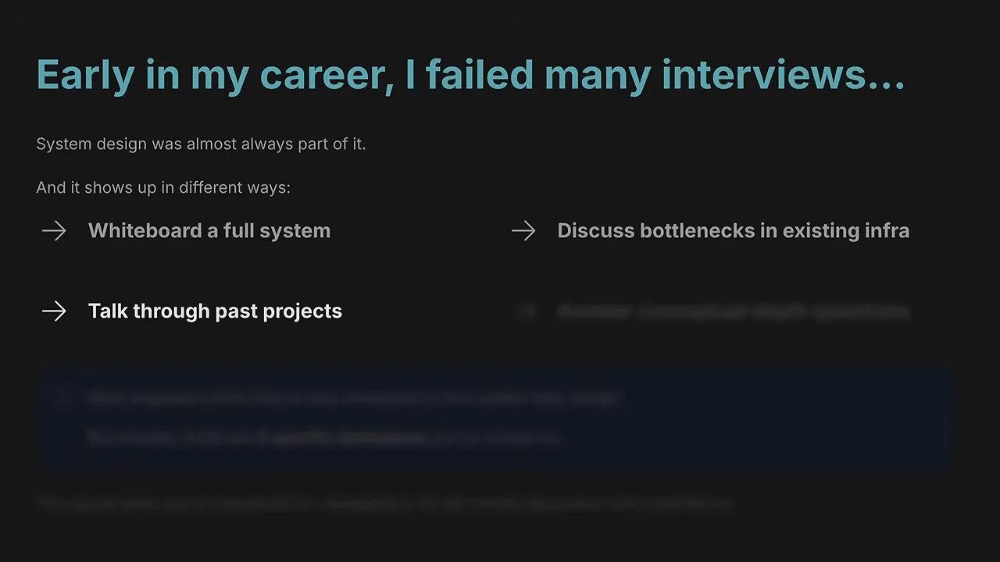
왜 코딩 면접보다 어렵게 느껴질까요
LeetCode 같은 코딩 면접은 입력과 출력이 분명해요. 함수가 어떤 인자를 받아 무엇을 돌려줘야 하는지 알고, 테스트로 답이 맞는지 확인할 수 있어요. 시스템 설계는 정반대예요. 슬라이드 오른쪽 문구처럼 요구사항이 모호하고 정답이 하나가 아니에요. 범위를 정하는 것부터가 지원자의 일이에요.
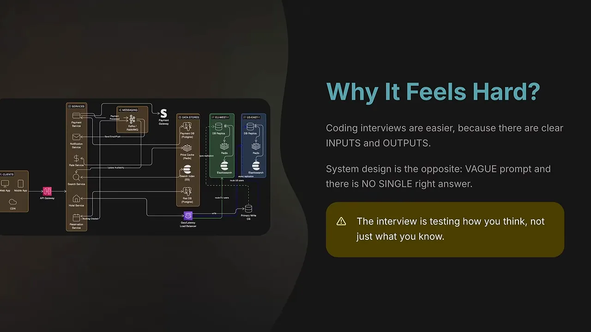
채점하는 다섯 가지
많은 지원자가 Spotify나 WhatsApp 같은 구조를 몇 개 외워 가요. 그건 다섯 기준 중 하나일 뿐이에요. 슬라이드의 다섯 줄을 위에서부터 보면 이래요.
| 기준 | 면접관이 보는 것 | 실제 업무로 바꾸면 |
|---|---|---|
| 소통과 협업 | 모호한 부분을 묻고, 가정을 그때그때 확인하나요? | 큰 기능을 받았을 때 혼자 가정하고 만들었다가 다시 만드는 일이 없나요? |
| 구조적 사고 | 모호한 문제를 순서 있는 단계로 쪼개나요? | 지금 무엇을 하고 다음에 무엇을 할지 늘 분명한가요? |
| 기술 판단 | DB(Database), 캐시, 메시지 큐를 고른 이유를 요구사항으로 설명하나요? | Kafka를 안다는 이유만으로 고르지 않나요? |
| 실전 감각 | 장애, 규모, 잘못될 수 있는 일을 먼저 떠올리나요? | 실제로 운영 시스템을 배포해 본 사람인가요? |
| 시간 관리 | 한 곳에 갇히지 않고 넓이와 깊이를 모두 다루나요? | 업무에서도 시간을 나눠 쓸 수 있나요? |
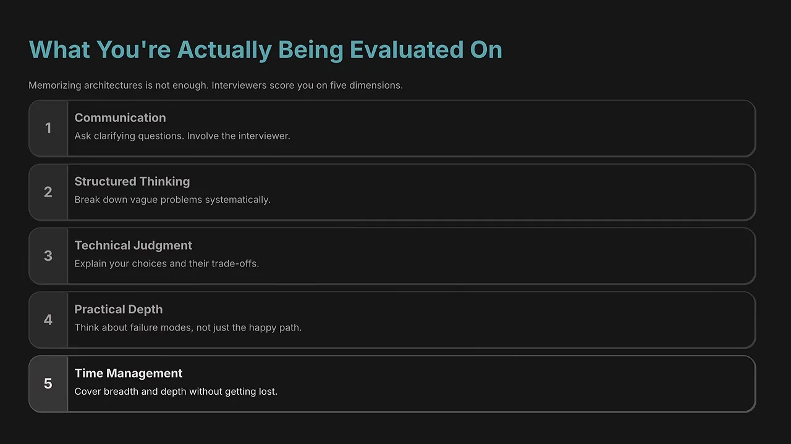
60분을 나누는 5단계
다섯 기준 중 시간 관리를 실제로 돕는 게 이 프레임워크예요. 어떤 화이트보드 면접에도 쓸 수 있는 반복 가능한 순서예요. 영상은 60분 면접이 더 흔하다며 60분을 기준으로 나눠요.
슬라이드의 다섯 칸 아래 작은 글씨가 단계별 시간이에요. 요구사항 약 10분, 데이터와 API 약 20분, 아키텍처 약 15분, 확장과 예외 상황 약 10분, 마무리 약 5분이에요. 데이터·API와 아키텍처는 순서를 바꿔도 돼요. 발표자는 보통 아키텍처부터 그린다고 해요.
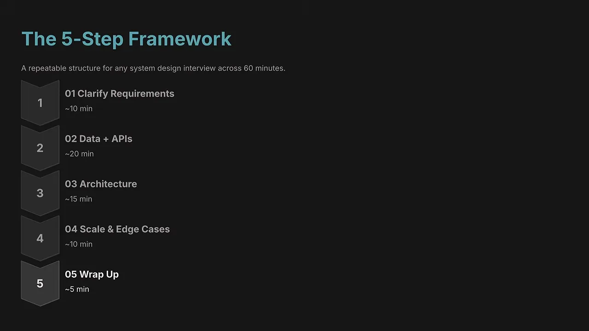
1단계: 요구사항부터 잠가요
그림부터 그리는 게 가장 흔한 실수예요. Spotify를 설계하라고 해도 60분에 다 만들 수는 없어요. 여러 팀이 몇 년 걸려 만든 제품이니까요. 그래서 왼쪽 기능 요구사항으로 주요 사용 사례와 범위 밖인 것을 정하고, 오른쪽 비기능 요구사항으로 제약을 정해요. 사용자 수, 읽기·쓰기 비율, 지연 목표, 허용 가능한 다운타임이에요.
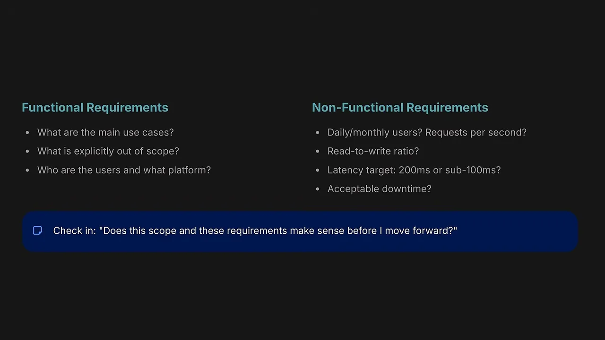
2단계: 데이터와 API
무엇을 저장하고 클라이언트가 어떻게 말을 거는지 정하는 단계예요. 카드 세 장을 왼쪽부터 보면 데이터 모델(엔터티와 관계, 키와 인덱스, 강한 일관성이 필요한 데이터), API 설계(요청·응답 형식, 페이지네이션, 에러 처리, 레이트 리밋, 버전 관리), 데이터베이스 선택이에요. YouTube라면 엔터티는 영상과 사용자예요.
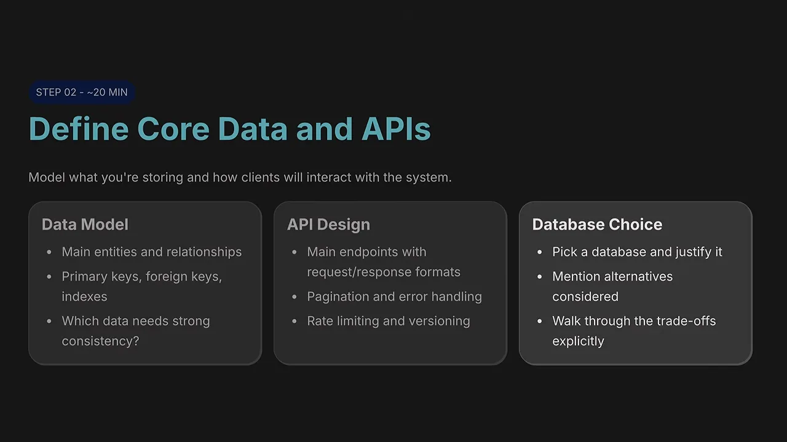
3단계: 아키텍처
아무것도 떠오르지 않으면 가운데 원을 둘러싼 네 칸으로 시작해요. 요청을 받는 API 서버, 트래픽을 나누는 로드 밸런서, 데이터를 저장하는 데이터베이스, 자주 읽는 데이터를 담는 캐시예요. 그다음 웹·모바일 앱에서 API 게이트웨이, 서버, 캐시, DB까지 요청이 흐르는 길을 읽기와 쓰기 모두 따라가요.
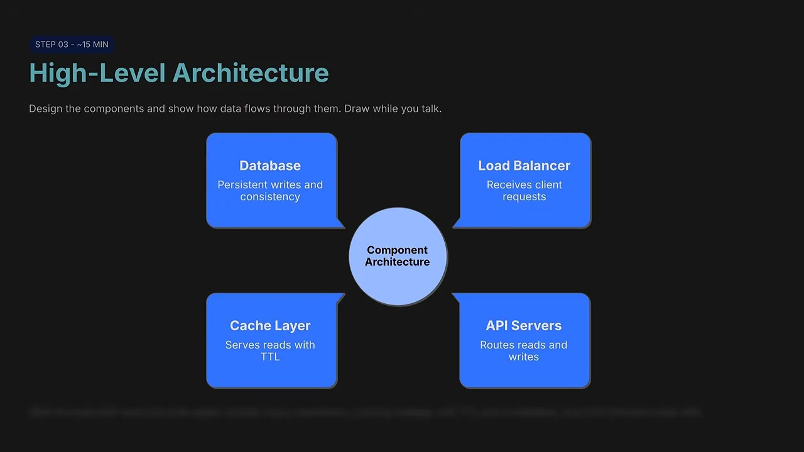
4단계: 무엇이 깨지는지
발표자는 이 단계가 중급과 시니어를 가장 분명하게 가른다고 말해요. 네 칸을 보면 단일 장애 지점을 찾아 해법을 내고, 캐시가 죽으면 느리지만 동작하는 길로 돌아가고, 멀티 AZ(Availability Zone) 복제본과 자동 확장으로 이중화하고, API 지연(p50/p95/p99)과 에러율로 모니터링해요. 모니터링은 자주 빠지지만 시니어처럼 생각한다는 강한 신호예요.
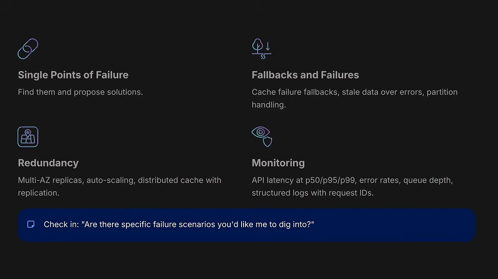
5단계: 트레이드오프와 다음 단계
마지막엔 왼쪽 파란 카드처럼 무엇을 우선했고 무엇을 포기했는지를 이유와 함께 요약해요. 오른쪽은 시간이 더 있거나 트래픽이 10배가 되면 무엇을 만들지예요. 60분 안에 완벽한 설계는 나오지 않아요. 개선할 점을 스스로 짚을 수 있는지를 봐요.
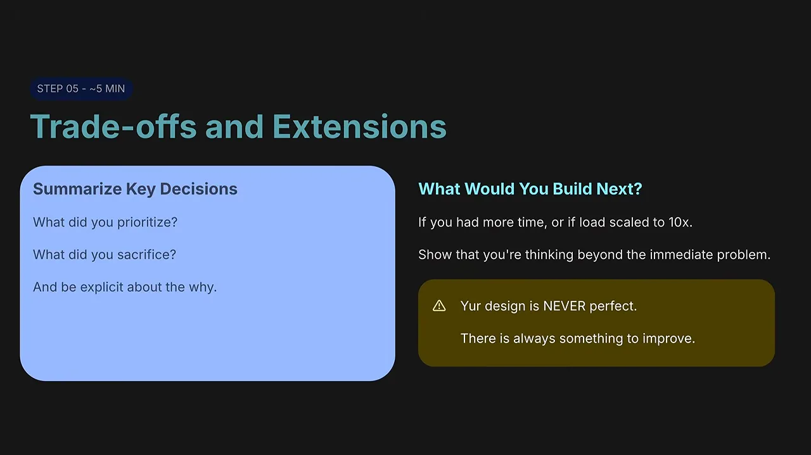
면접 중에 할 일
흰 글씨가 할 일, 빨간 글씨가 그 반대예요. 질문 없이 해법으로 뛰어드는 것은 그 자체로 감점이에요. 혼자 침묵하며 그리거나 쉬지 않고 떠드는 것도 피해요. 결제 시스템이라 SQL이 당연해 보여도 이유를 말하지 않으면 모른다고 여겨요.
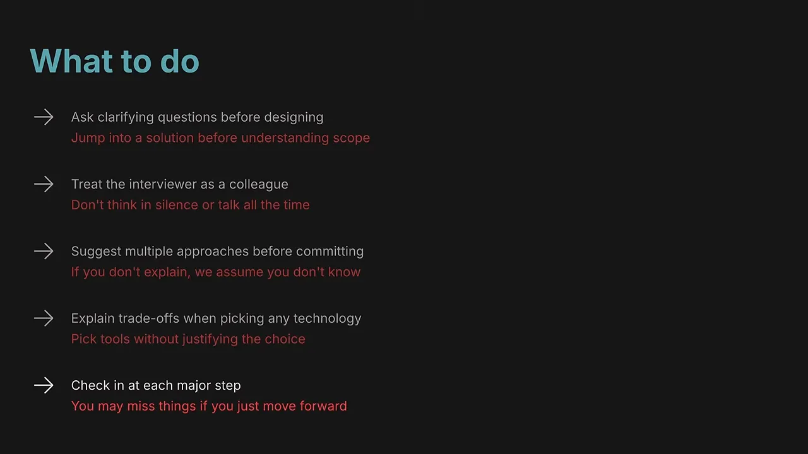
Spotify ①: 요구사항과 읽기·쓰기 흐름
첫 사례는 음악 스트리밍이에요. 오디오 전송, 메타데이터 관리, 오브젝트 스토리지가 다 들어 있어서 고전적인 문제예요. 영상은 요구사항과 용량 계획, 아키텍처, 읽기·쓰기 흐름, API, 저장소, 확장 순서로 가요.
요구사항과 가정
사용자 약 50만 명이 곡 약 3천만 곡을 듣는 서비스로 시작해요. 왼쪽 목록이 핵심 기능이에요. 아티스트는 곡을 올리고, 사용자는 검색·재생하고 플레이리스트를 만들고 프로필을 관리해요. 헬스 체크, 에러 추적, 성능 지표 같은 기본 모니터링도 넣어요. 오른쪽은 오디오 형식이에요. Ogg와 AAC(Advanced Audio Coding)로 64kbps(모바일 데이터 절약), 128kbps(표준), 320kbps(프리미엄)를 내보내고, 표준 음질 한 곡은 평균 3MB로 가정해요.
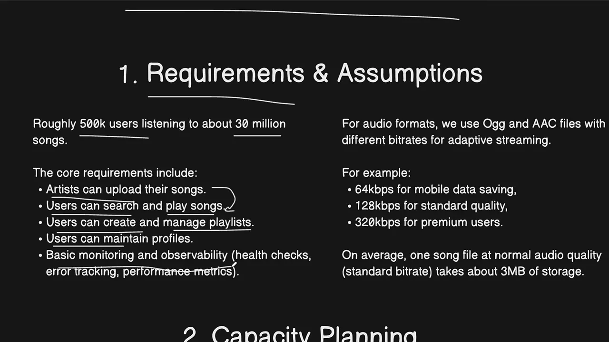
용량 계획이 알려 주는 것
왼쪽 위 'Song storage'부터 보면 3MB × 3천만 곡 = 90TB예요. 지역별 복제본과 아티스트의 재업로드를 더하면 2~3배를 잡아야 해요. 오른쪽 'Song metadata'는 곡당 100바이트로 3GB, 아래 'User metadata'는 1KB × 50만 명으로 0.5GB예요. 하루 대역폭은 평균 3.5분 청취, 128~160kbps면 곡당 3~4MB이고, 사용자가 하루 10~15곡을 들어요. 클라우드가 데이터를 밖으로 내보낼 때 받는 이그레스 비용이 커지는 이유예요.
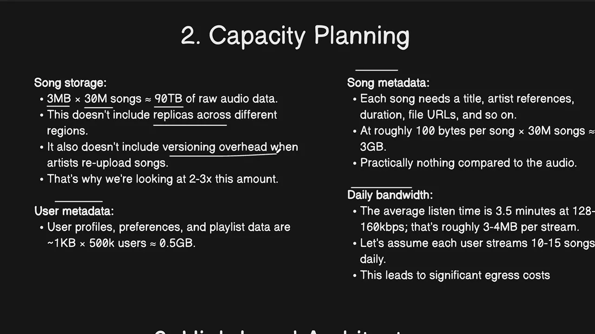
세 숫자를 같은 눈금에 놓으면 차이가 바로 보여요. 오디오 막대에 비해 메타데이터 막대는 선 하나만큼도 안 돼요.
고수준 아키텍처
그림을 왼쪽부터 따라가면 모바일 앱이 HTTP(HyperText Transfer Protocol) 요청을 보내고, 로드 밸런서가 API 서버 세 대에 나눠요. 알고리즘은 라운드 로빈이나 최소 연결이고, 로드 밸런서가 서버 헬스 체크도 해요. API 서버는 오른쪽 위 SQL DB에서 메타데이터를 읽고, 오른쪽 아래 블롭 스토리지의 오디오에는 서명된 URL(Uniform Resource Locator)을 만들어 줘요. 블롭 스토리지는 AWS(Amazon Web Services) S3(Amazon Simple Storage Service) 같은 것으로, 큰 파일을 거의 무한히 싸고 안전하게 담아요.
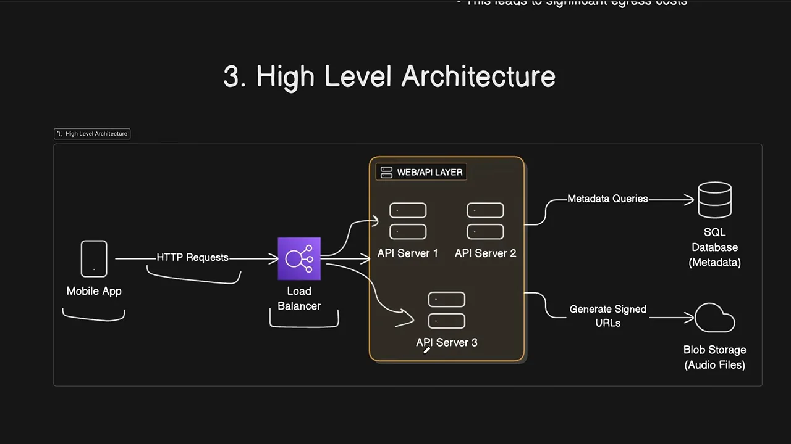
읽기 흐름: 재생 버튼을 누르면
시퀀스 다이어그램 윗부분이에요. 사용자가 재생을 누르면 앱이 GET /songs/{id}를 보내고, 로드 밸런서가 API 서버로 넘겨요. API 서버는 JWT(JSON Web Token) 토큰을 확인한 뒤, 'JWT valid' 상자 안에서 SQL DB에 곡 메타데이터를 묻고 서명된 URL을 만들어 함께 돌려줘요.
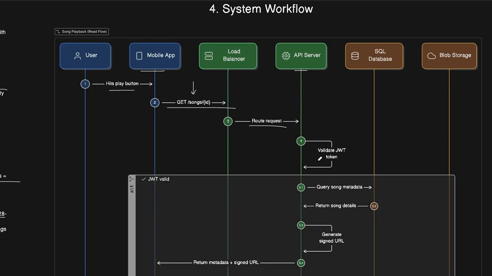
아랫부분 'Audio streaming' 상자에서 앱은 서명된 URL로 블롭 스토리지에 범위 요청을 보내 오디오를 조각조각 받아요. 그 아래 POST /songs/{id}/play는 재생 기록을 남기는 분석용 요청이고, 맨 아래 'JWT invalid' 줄이 인증 오류를 돌려주는 경우예요.
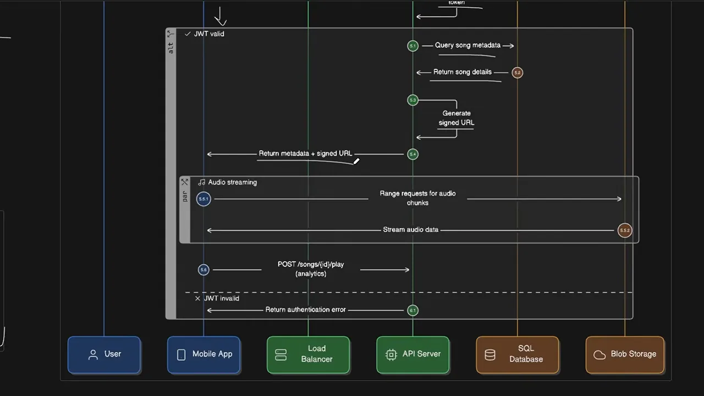
쓰기 흐름: 아티스트가 곡을 올리면
업로드는 먼저 파일 형식과 크기를 검사해요. 'invalid file'이면 지원하지 않는 형식·크기라며 거절해요. 'valid file'이면 블롭 스토리지의 임시 경로에 파일을 저장하고, 길이와 비트레이트 같은 오디오 메타데이터를 뽑아 곡·아티스트 레코드를 SQL에 넣어요. 그다음 파일을 artist/{id}/album/{id} 경로로 옮기고, 'cache invalidation' 상자에서 아티스트·앨범의 CDN(Content Delivery Network) 캐시를 무효화해요.
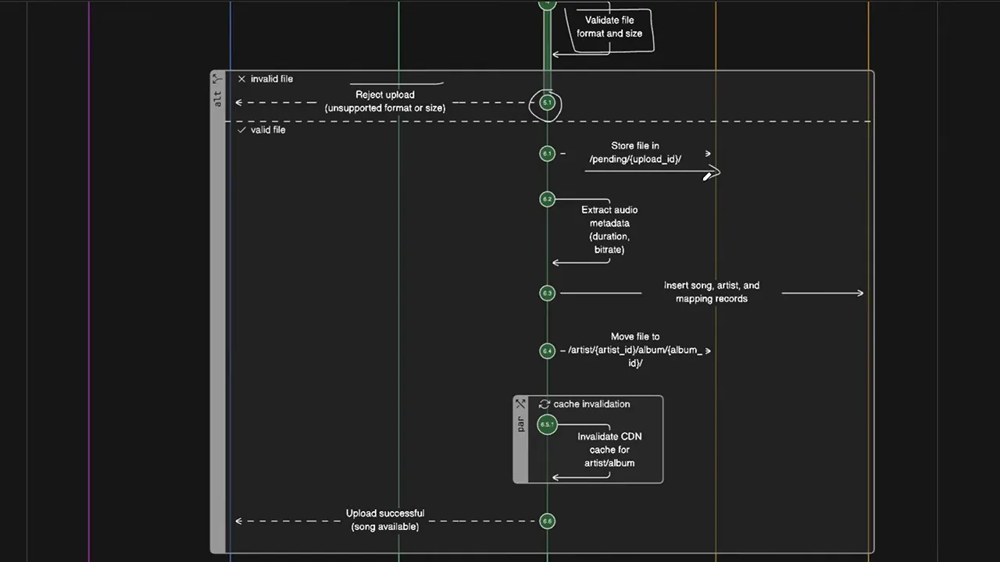
Spotify ②: API, 저장소, 5천만 명으로 키우기
API 설계
슬라이드는 API를 네 묶음으로 나눠요. 왼쪽 'Search & Discovery'에는 검색, 인기곡, 아티스트별 곡이 있고, 그 아래 'Content Access'에는 곡 메타데이터와 스트리밍 URL이 있어요. 목록을 돌려주는 엔드포인트에는 모두 limit을 붙이고, 검색에는 시작 위치 offset도 붙여요.
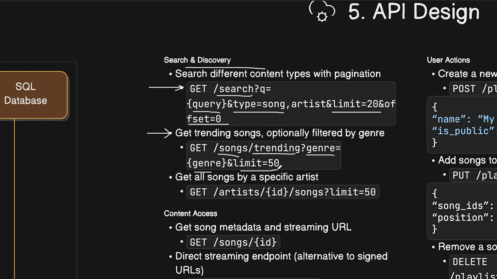
오른쪽 'User Actions'는 사용자가 바꾸는 요청이에요. 플레이리스트를 만들 때는 이름과 공개 여부만 보내고, 곡을 추가할 때는 곡 ID(Identifier) 목록과 끼워 넣을 위치를 보내요. 다섯 곡이 있으면 다섯 번째나 여섯 번째 자리부터 넣는 식이에요.
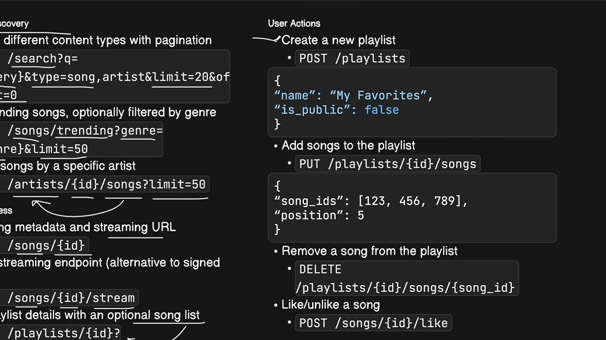
화면에 흩어진 엔드포인트를 한 표로 모으면 이래요.
| 묶음 | 하는 일 | 엔드포인트 |
|---|---|---|
| 검색·탐색 | 곡·아티스트 검색 | GET /search?q=&type=&limit=20&offset=0 |
| 인기곡(장르 필터) | GET /songs/trending?genre=&limit=50 | |
| 아티스트의 곡 | GET /artists/{id}/songs?limit=50 | |
| 콘텐츠 접근 | 메타데이터와 스트리밍 URL | GET /songs/{id} |
| 직접 스트리밍(서명 URL 대안) | GET /songs/{id}/stream | |
| 플레이리스트와 곡 목록 | GET /playlists/{id}?include_songs=true | |
| 사용자 행동 | 플레이리스트 만들기 | POST /playlists |
| 곡 추가 | PUT /playlists/{id}/songs | |
| 곡 빼기 | DELETE /playlists/{id}/songs/{song_id} | |
| 좋아요 | POST /songs/{id}/like | |
| 사용자 관리 | 내 플레이리스트 | GET /users/me/playlists |
| 내가 좋아한 곡 | GET /users/me/liked-songs?limit=50&offset=0 | |
| 아티스트 팔로우 | POST /users/me/follow/{artist_id} |
저장소: 블롭 스토리지와 SQL
오디오는 SQL에 담을 수 없을 만큼 커서 S3나 Azure Blob Storage에 둬요. 메모의 세 줄이 규칙이에요. 오디오 파일은 바꾸지 않고(고칠 땐 다시 올리고 옛 파일을 지워요), /artist/{artistId}/album/{albumId}/{songId}.ogg 같은 경로로 정리해요.
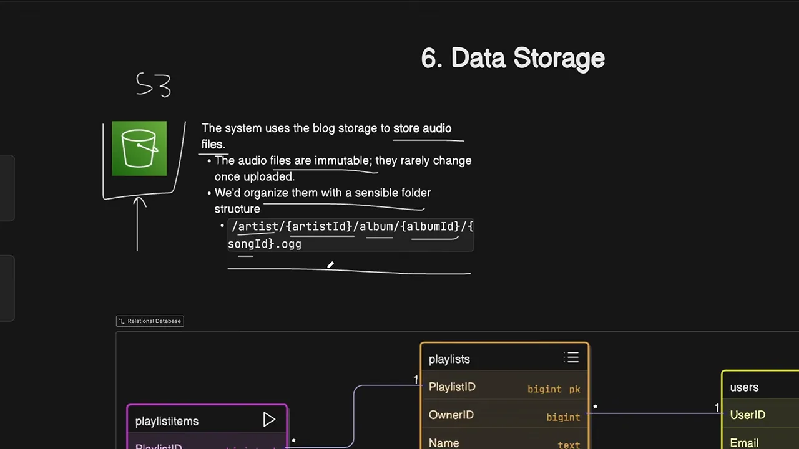
메타데이터는 PostgreSQL이나 MySQL 같은 관계형 DB에 둬요. 그림 오른쪽 위 users(이메일, 비밀번호 해시, 가입일, 구독 유형, 국가)의 UserID가 playlists의 OwnerID와 이어지고, 왼쪽 위 playlistitems가 플레이리스트와 곡을 잇는 연결 테이블이에요(Position, AddedAt 포함). 가운데 songs에는 재생할 때 쓰는 FileURL이 있고, 왼쪽 아래 artistsongs가 곡과 오른쪽 아래 artists를 이어요.
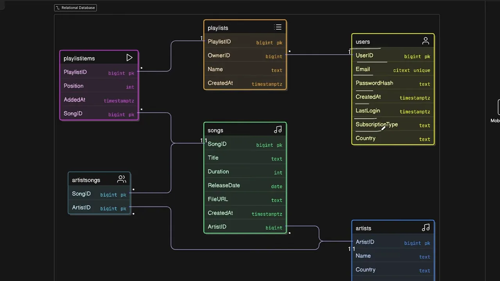
SQL을 고른 이유는 플레이리스트와 곡, 곡과 아티스트처럼 조인이 많고 '내가 팔로우하는 아티스트의 모든 곡' 같은 복잡한 질의가 필요해서예요. 데이터가 커지면 자주 찾는 열에 인덱스를 걸어요. 곡 제목, 아티스트 이름, 연결 테이블의 곡 ID예요.
5천만 명, 2억 곡으로 키우기
사용자가 5천만 명, 곡이 2억 곡이 되면 다시 계산해요. 슬라이드의 세 줄처럼 곡 메타데이터 20GB, 사용자 메타데이터 50GB, 오디오 600TB예요. 오디오는 복제본과 지역 사본 전 숫자라 실제로는 2~3배가 돼요.
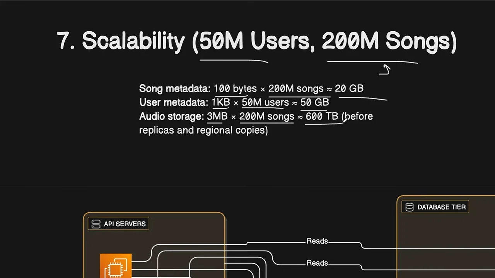
앞단부터 바꿔요. 왼쪽 'CDN EDGES'에 북미, 유럽, APAC(Asia-Pacific), 남미 엣지를 두고, LRU(Least Recently Used) 정책으로 캐시가 차면 가장 오래 안 쓴 콘텐츠를 지워요. 가운데 로드 밸런서는 두 지역 이상에 두고, 오른쪽 API 서버는 세션을 들고 있지 않아서 복제만 하면 늘어나요.
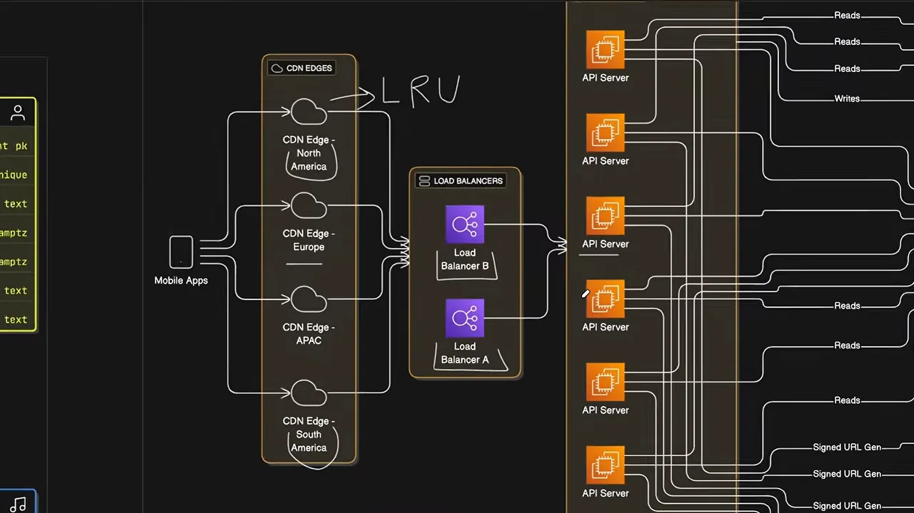
DB는 한 대로 버틸 수 없어요. 'DATABASE TIER' 상자를 보면 쓰기는 가운데 DB Leader가 받고, 오른쪽 'DB FOLLOWERS' 세 대가 복제받아 읽기를 맡아요. 곡과 플레이리스트 메타데이터 조회는 팔로워에서 해요. 그래도 부족하면 아래 'DB SHARDS'처럼 미국 사용자, 유럽 사용자로 나누고 곡은 아티스트 ID 범위로 나눠요.
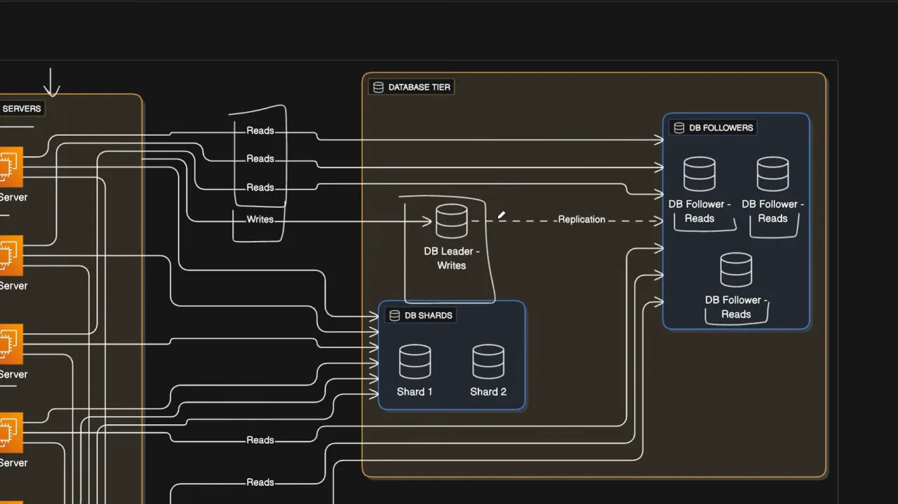
블롭 스토리지도 지역별로 복제해요. 오른쪽 아래 'BLOB STORAGE REPLICAS'에 유럽, 북미, APAC, 남미 저장소가 있고, 사용자는 자기 지역에 올려요. 서버에서 나가는 'Signed URL Gen' 화살표처럼 접근은 여전히 서명된 URL로 해요.
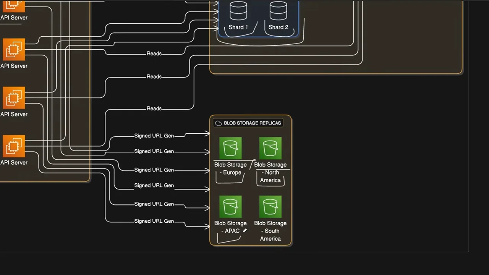
시니어와 중급을 가르는 피라미드
마지막 그림은 설계를 피라미드로 봐요. 맨 아래 초록 칸이 가장 넓은 계획(요구사항 이해, 용량 추정, 아키텍처 선택)이고, 가운데 파란 칸이 기술 선택(DB, 캐시 계층, 저장소), 맨 위 보라 칸이 코드예요. 코드는 머리를 가장 덜 쓰는 단계라, 코딩만 할 줄 알면 Claude나 GPT(Generative Pre-trained Transformer) 모델이 더 빠르고 싸게 대신한다고 말해요.
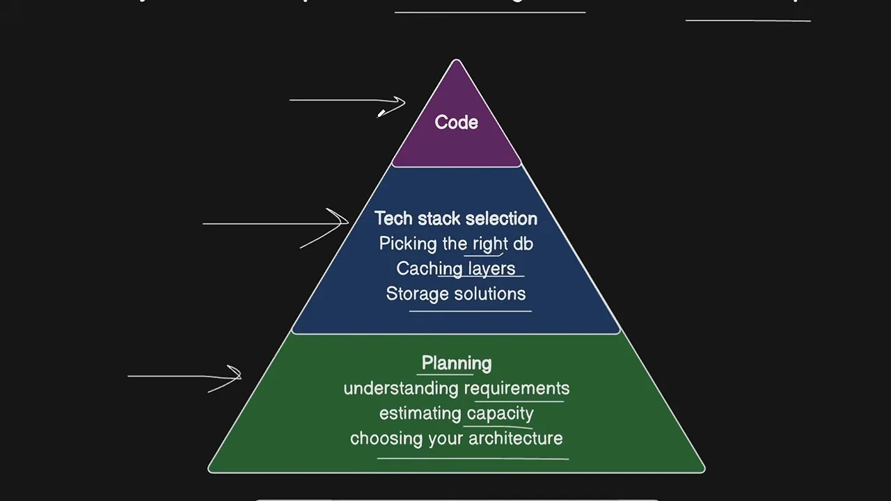
호텔 예약 ①: 요구사항, 용량 계산, 서비스 나누기
두 번째 사례는 Booking.com이나 Airbnb 같은 호텔 예약이에요. 발표자는 이 문제를 캐시와 복제만 붙인 CRUD(Create, Read, Update, Delete) 앱으로 보는 게 흔한 실수라고 해요. 두 사용자가 마지막 남은 방을 동시에 예약하면, 단순하게 SELECT로 확인하고 INSERT로 넣는 방식은 이중 예약을 만들어요. 카드 두 장이 결제되고, 환불과 화난 고객과 믿을 수 없는 시스템이 남아요.
그래서 이 문제는 시니어를 가르는 능력을 그대로 시험해요. 부하가 커도 깨지지 않는 동시성 처리, 여러 시스템에 걸친 데이터 일관성, 장애를 전제로 한 설계예요.
먼저 묻는 질문과 요구사항
슬라이드 맨 위 'Clarifying Questions' 네 줄이 범위를 정하는 질문이에요. 플랫폼에서 결제하나요, 체크인 때 하나요? 웹만인가요, 모바일 앱도 있나요? 취소와 오버부킹을 지원하나요(호텔은 보통 5~10%를 허용해요)? 가격이 수요와 날짜에 따라 바뀌나요? 영상은 넷 다 '예'로 정해요. 발표자는 녹화하는 그 호텔방도 크리스마스라 평소의 세 배였다고 말해요.
가운데 'Functional Requirements'는 호텔 관리, 검색, 예약 흐름(이중 예약 방지 포함), 결제, 알림이에요. 핵심 기능을 고르는 요령도 알려 줘요. 이게 빠지면 더는 Booking.com이 아닌 기능이 무엇인지 물으면 돼요. 위치로 호텔을 못 찾으면 쓸모없는 앱이 되니 검색은 핵심이에요.
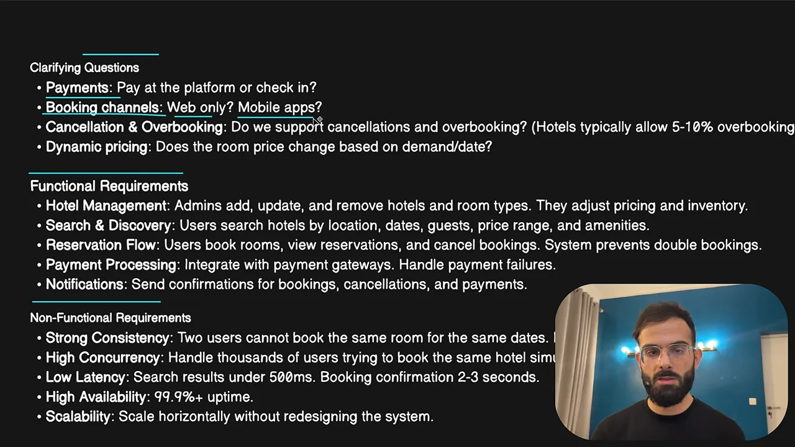
비기능 요구사항은 이래요. 예약은 강한 일관성이 필요하지만 검색은 최종 일관성이면 충분해요. 수천 명이 같은 호텔을 동시에 예약해도 버텨야 하고, 검색 결과는 500ms 안에, 예약 확정은 2~3초 안에 나와야 해요. 가용성은 99.9% 이상, 그리고 나중에 처음부터 다시 설계하지 않고 수평으로 늘릴 수 있어야 해요.
퍼널로 숫자 잡기
필요한 숫자는 두 가지예요. 초당 질의 수(QPS)와 예약이 DB에 쓰이는 초당 트랜잭션 수(TPS)예요. 슬라이드의 깔때기처럼 방문자 100% 중 10%만 예약 페이지로 가고, 그중 10%만 실제로 예약해요. 대부분은 구경만 하는 사람이지만 그들도 QPS를 올리니 설계에 넣어야 해요.
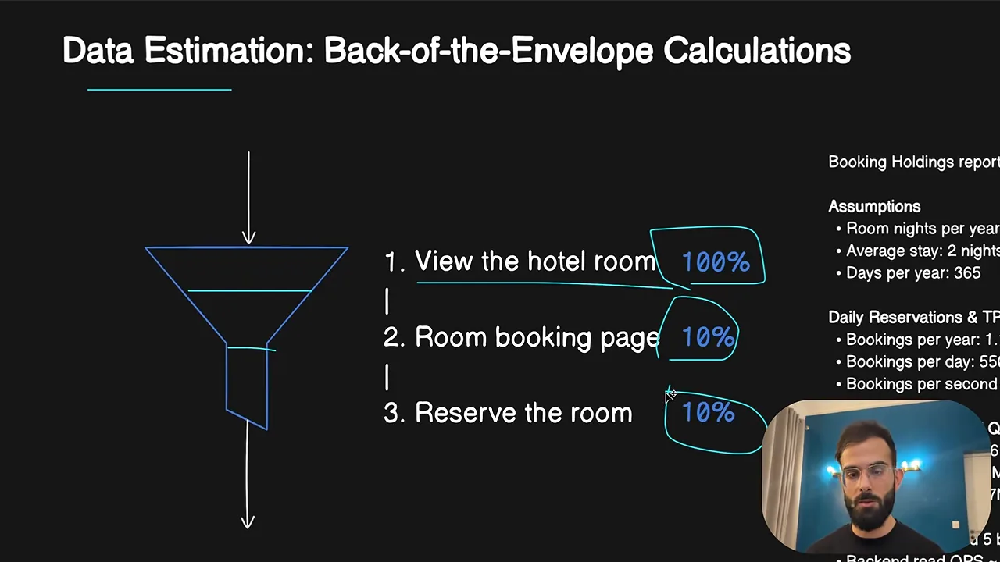
슬라이드의 'Daily Reservations & TPS'와 'Traffic Funnel & Read QPS'가 실제 계산이에요. Booking Holdings가 2024년에 11억 룸나잇을 넘겼다는 숫자에서 출발해요. 룸나잇은 예약 건수가 아니라 '방 × 박수'라서 평균 2박으로 나눠야 예약 건수가 나와요.
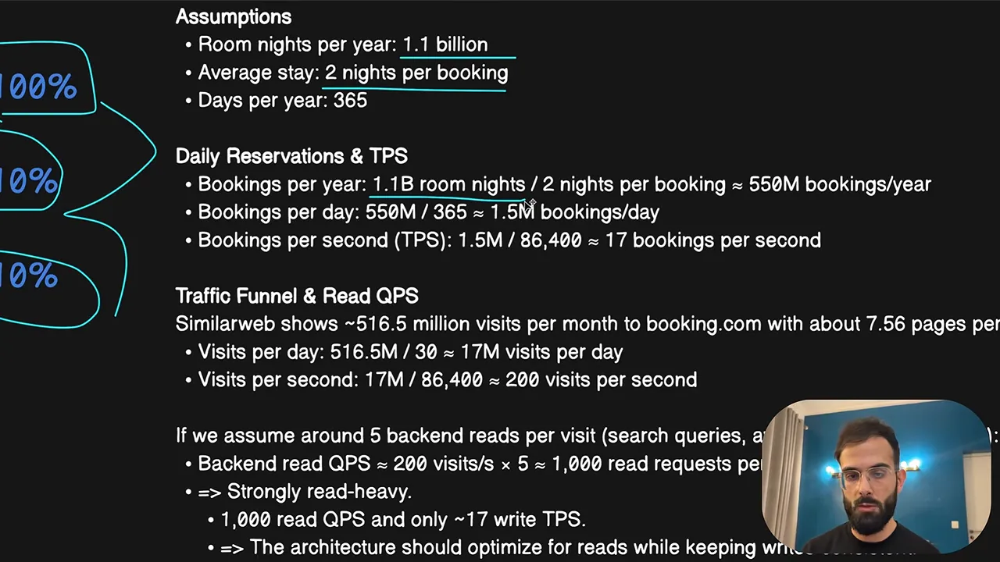
두 계산을 나란히 놓으면 이 시스템의 성격이 보여요. 위 줄은 예약 건수에서 쓰기 속도를, 아래 줄은 방문자 수에서 읽기 속도를 구해요. 방문 한 번에 페이지는 약 8장(슬라이드는 7.56장)을 보지만, 백엔드 읽기는 검색, 재고 확인, 가격 조회 등 5번으로 잡아요.
서비스 나누기
숫자가 나오면 경계가 분명한 서비스 지향 구조로 그려요. 왼쪽 'CLIENTS'의 웹·모바일 앱이 CDN에서 이미지와 JavaScript를 받고, 분홍색 API 게이트웨이가 유일한 입구가 돼요. 게이트웨이는 인증, 레이트 리밋, 서비스 간 라우팅을 맡고 같은 서비스의 인스턴스들 사이에서 로드 밸런서 역할도 해요.
가운데 'SERVICES' 상자의 다섯 서비스는 이래요. 호텔 서비스는 거의 바뀌지 않아 캐시하기 좋은 호텔·객실 정보를 맡아요. 예약 서비스는 재고 확인, 예약 생성·취소, 그리고 동시성 처리를 맡는 핵심이에요. 요금 서비스는 날짜와 수요에 따른 동적 가격을, 결제 서비스는 Stripe, PayPal, Apple Pay, Google Pay 연동을, 알림 서비스는 이메일과 푸시를 맡아요. 저장소는 ACID(Atomicity, Consistency, Isolation, Durability) 보장이 필요해서 PostgreSQL로 시작하고, 잘 안 바뀌는 데이터는 Redis에 캐시해요.
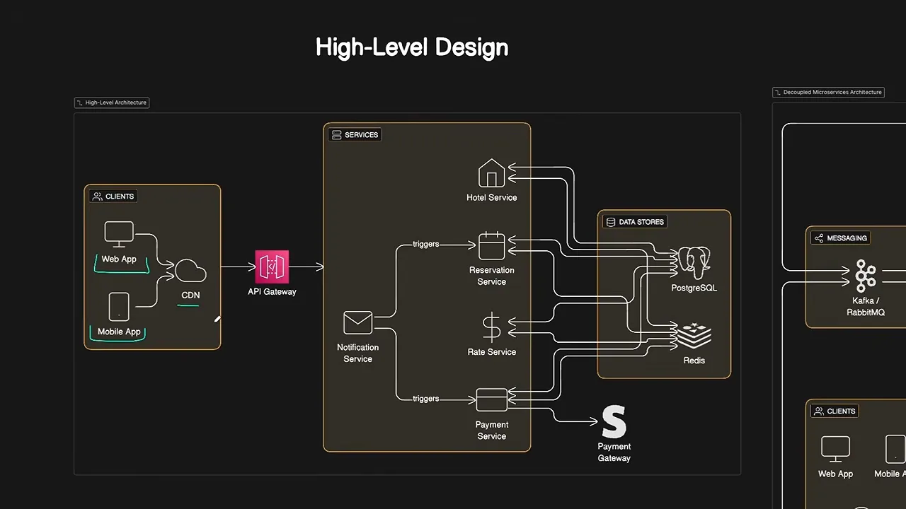
발전된 그림에는 두 가지가 더해져요. 하나는 검색 서비스와 'Search Index (ES)'예요. Elasticsearch가 호텔 이름·설명 전문 검색, 반경 5km 같은 위치 필터, 가격·평점 필터를 PostgreSQL보다 훨씬 빠르게 처리해요. 대신 최종 일관성이에요. 다른 하나는 왼쪽 위 'MESSAGING'의 Kafka/RabbitMQ예요. 결제가 끝나면 메시지를 발행하고, 그 메시지가 알림 서비스로 가서 이메일·푸시를 보내고 검색 서비스로 가서 객실 상태를 갱신해요.
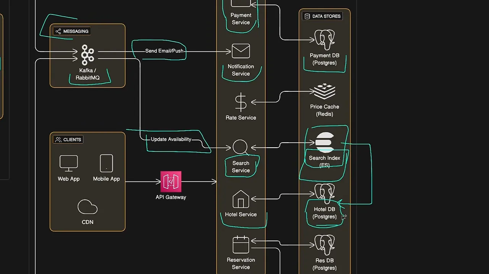
그림처럼 서비스마다 DB를 따로 두면 무엇을 얻고 잃을까요. 영상은 세 선택지를 비교해요.
| 방식 | 좋은 점 | 대가 |
|---|---|---|
| 모놀리스 하나 | 트랜잭션이 단순해요 | 수백 명이 한 코드에서 일하면 독립적으로 배포하고 확장하기 어려워요 |
| 완전한 마이크로서비스(서비스마다 DB) | 서비스별로 따로 배포하고 키워요 | 모놀리스에는 없던 분산 트랜잭션과 일관성 문제가 생겨요 |
| 실용적 절충 | 강하게 묶인 데이터(예약과 호텔)는 한 DB에 두고 로컬 ACID 트랜잭션을 써요 | 애플리케이션 계층에서만 서비스를 나눠요 |
호텔 예약 ②: API, 데이터 모델, 이중 예약
API: 검색은 Elasticsearch, 확인은 PostgreSQL
모든 작업은 REST API로 만들어요. 그림에서는 프런트엔드가 서비스마다 직접 부르지만, 마이크로서비스가 많으면 앞에 GraphQL 계층을 두는 방법도 흔하다고 해요. 프런트엔드는 GraphQL 스키마만 알고, 뒤의 서비스 호출은 GraphQL 계층이 맡아요.
영상의 시퀀스 다이어그램은 엔드포인트를 이렇게 정리해요. 모두 /v1 접두사로 버전을 붙여요.
- 호텔: 목록
GET /v1/hotels는 Elasticsearch로 필터링하고, 단일 호텔GET /v1/hotels/{id}는 PostgreSQL에서 읽어요. 관리자의 추가(POST), 수정(PUT), 삭제(DELETE)는 SQL에 먼저 반영하고 바로 확인을 보여 준 뒤, 나중에 Elasticsearch에 반영해요. - 객실 유형: 호텔의 하위 자원이라
/v1/hotels/{id}/rooms,/v1/hotels/{id}/rooms/{id}로 같은 패턴을 반복해요. - 예약: 내역
GET /v1/reservations, 상세와 영수증GET /v1/reservations/{id}, 생성POST /v1/reservations, 취소DELETE, 날짜 변경PUT이에요. 취소는 일주일 전이면 허용하고 직전이면 거절하는 식으로 DB에서 규칙을 확인해요. - 검색:
GET /v1/search에 위치, 체크인·체크아웃, 인원, 침대 수, 가격대를 넘기고 Elasticsearch에서 찾아요.
같은 사용자의 중복 클릭은 멱등성 키로
예약에서 막아야 할 중복은 두 종류예요. 같은 사용자가 버튼을 두 번 누르는 경우와 서로 다른 두 사용자가 같은 방을 잡는 경우예요. 첫 번째는 여기서 바로 풀어요. 화면 가운데 'Important Detail' 상자처럼 POST /v1/reservations 본문에 reservationId를 넣어요. 프런트엔드가 UUID(Universally Unique Identifier)로 한 번만 만들어 두니 두 번 눌러도 같은 값이 가요. 이 값이 멱등성 키예요.
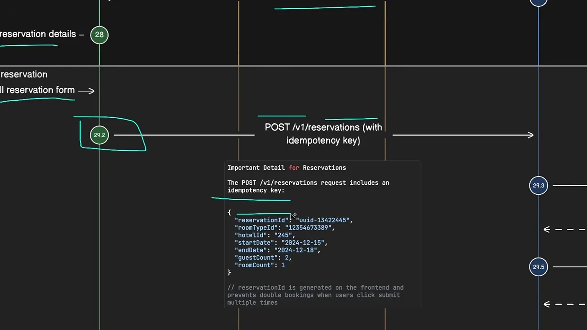
서버는 같은 reservationId가 이미 있으면 새로 만들지 않고 기존 예약을 돌려줘요. 백엔드에서 hotel_id, room_id, user_id를 묶어 해시로 막는 방법도 있지만, 날짜나 타임스탬프까지 넣지 않으면 같은 호텔의 다음 예약까지 막아 버려요. 매번 DB에서 해시를 확인하는 것보다 프런트엔드 UUID가 훨씬 가볍다고 해요. 새 예약이 저장되면 Kafka 메시지가 발행돼 사용자와 호텔 주인에게 알림이 가요.
데이터 모델: 방이 아니라 객실 유형을 예약해요
가장 중요한 관점은 사용자가 특정 방이 아니라 '더블 퀸 베드' 같은 객실 유형을 예약한다는 점이에요. 방 번호는 체크인 때 정해요. 영상의 테이블들은 여러 화면에 걸쳐 있어서 관계만 한 장으로 모았어요.
erDiagram
hotel ||--o{ room_type : "has"
room_type ||--o{ room_type_rate : "priced by"
room_type ||--o{ room : "contains"
hotel ||--o{ room_type_inventory : "tracks"
room_type ||--o{ room_type_inventory : "per date"
guest ||--o{ reservation : "makes"
room_type ||--o{ reservation : "booked as"
reservation ||--o{ transaction : "has"
hotel { int hotel_id PK
string name
geography location }
room_type { int room_type_id PK
int hotel_id FK
int max_occupancy }
room_type_rate { date date PK
int room_type_id PK
decimal rate }
room { int room_id PK
int room_type_id FK
boolean is_available }
room_type_inventory { int hotel_id PK
int room_type_id PK
date date PK
int total_inventory
int total_reserved }
reservation { int reservation_id PK
int room_type_id FK
int guest_id FK
date start_date
date end_date
string status }
transaction { int transaction_id PK
int reservation_id FK
string transaction_type
decimal amount }
테이블마다 이유가 있어요. room_type_rate는 기본 100달러, 전망 좋은 방 150달러, 조식 포함 200달러처럼 같은 유형에도 요금이 여럿이라 따로 둬요. room은 체크인 때 배정할 실제 방이고, 층과 사용 가능 여부를 가져요. 같은 브랜드의 여러 호텔은 다른 ID로 두거나 hotel_groups 같은 보조 테이블로 묶어요.
transaction을 reservation에서 떼어 낸 것도 같은 이유예요. 예약 후 날짜를 바꾸면 차액 결제가, 취소하면 마이너스 금액의 환불이 생겨요. 한 예약에 거래가 여러 건 붙으니 따로 둬요.
재고 확인과 오버부킹
room_type_inventory 행은 앞으로 2년 치를 미리 만들어 두고, 매일 cron 작업이 새 날짜를 추가해요. 화면 위쪽 예시 데이터는 호텔 211의 객실 유형 1001이 12월 15~17일에 총 100실 중 87, 89, 92실이 예약된 상태예요. 아래 SQL은 12월 23~27일의 재고를 한 번에 읽어요.
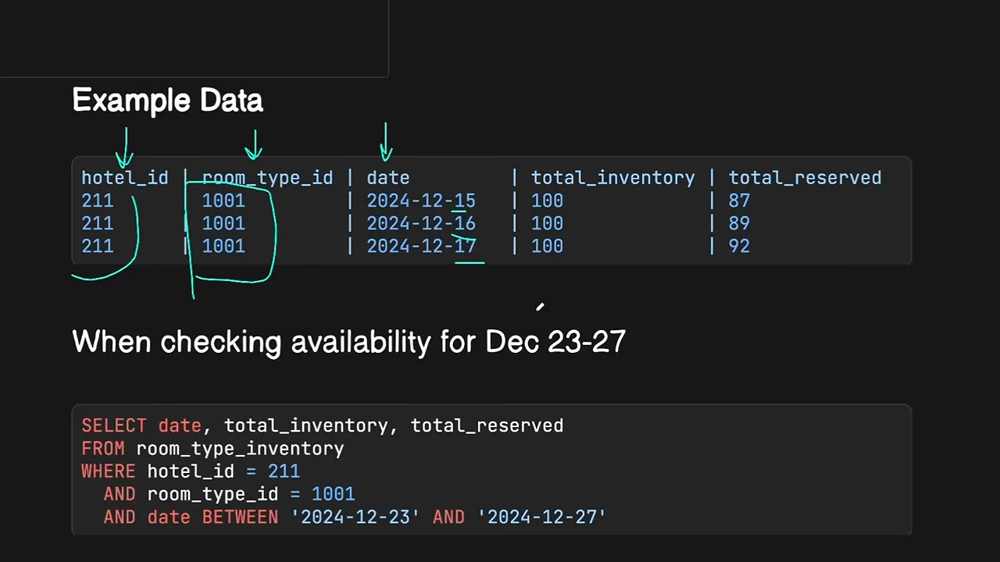
위 식은 예약 수 + 예약할 방 수 ≤ 총재고예요. 92 + 1 ≤ 100이니 예약할 수 있어요. 아래 식은 오버부킹 계수를 곱해요. 10%를 허용하면 총재고 100에 110실까지 받아요. 그중 10실 정도는 날짜 전에 취소될 거라 보는 거예요.
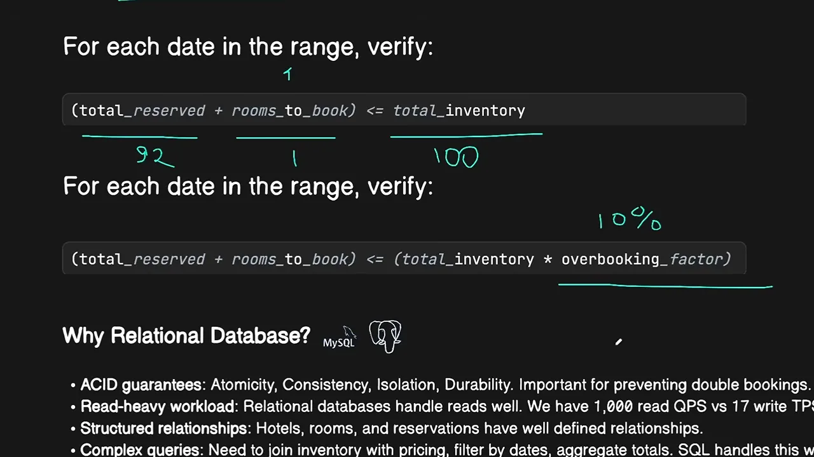
두 사용자가 마지막 방을 동시에 잡으면
두 번째 중복이 진짜 어려운 부분이에요. SQL의 기본 격리 수준인 READ COMMITTED는 다른 트랜잭션이 커밋한 데이터만 보여 줘요. 문제는 확인(읽기)과 예약(쓰기) 사이의 틈이에요. 화면의 Time 1~5를 따라가면 A와 B가 둘 다 예약 수 99를 읽고, 둘 다 99 + 1 ≤ 100을 통과하고, 둘 다 예약을 써요. 이렇게 이중 예약이 생겨요.
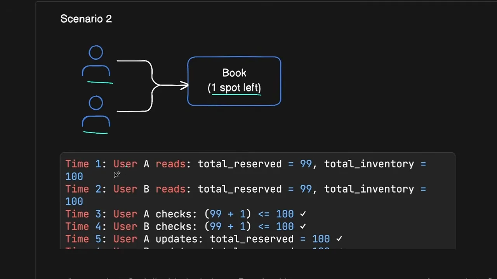
발표자는 해결책이 두 가지라고 말한 직후 확장 단계로 넘어가요. 그래서 해법은 화면에 잠깐 비친 슬라이드로만 알 수 있어요. 왼쪽 “Approach 1: Serializable Isolation + Row Locking”은 재고 행을 SELECT ... FOR UPDATE로 읽고, 애플리케이션에서 확인한 뒤 갱신하고 예약을 넣어요. 제목은 Serializable이지만 코드의 첫 줄은 READ COMMITTED이고, 실제로 막는 건 FOR UPDATE 행 잠금이에요. 오른쪽 “Approach 2”는 잘려 있지만, 테이블에 버전 열을 추가하고 읽은 버전을 저장해 두는 코드가 보여요. 낙관적 잠금으로 보여요.
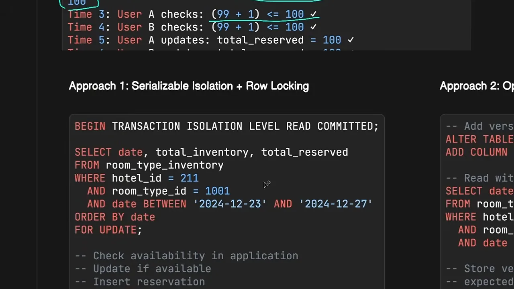
호텔 예약 ③: 샤딩, 캐시, Elasticsearch, 복제
hotel_id로 샤딩해요
읽기 1,000 QPS와 쓰기 17 TPS면 결국 샤딩이 필요해요. 가장 중요한 결정은 샤드 키예요. 영상은 hotel_id를 골라요. 대부분의 질의가 먼저 호텔(위치)을 거르고 그 호텔의 객실 유형을 가져와요. 한 호텔의 데이터가 한 샤드에 모이니 샤드를 넘나드는 조인이 없고, 샤드 안에서 로컬 트랜잭션을 쓸 수 있어요.
그림 위 공식이 처음 배치 방식이에요. 발표자가 'consistent'에 줄을 긋는 장면이에요. 처음에는 일관된 해싱이 아니라 단순히 hash(hotel_id) % 샤드 수로 시작해요. 아래 16개 DB 그림처럼 1,000 QPS를 16개 샤드로 나누면 샤드당 읽기 약 62 QPS, 쓰기 약 1 TPS예요.
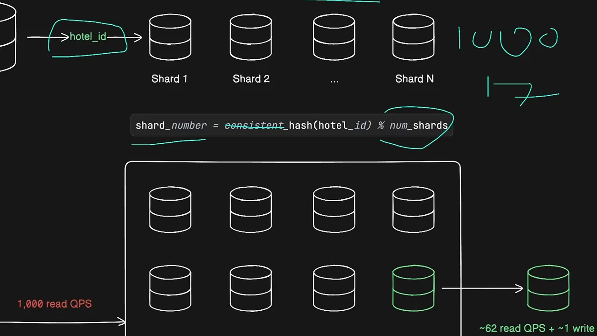
문제는 샤드를 더할 때예요. 17번째 DB를 넣으면 모듈로 방식은 1~16번의 데이터를 거의 다 다시 섞어야 해요. 일관된 해싱은 서버와 키를 모두 원 위의 점으로 놓고, 키를 시계 방향으로 가장 가까운 서버에 둬요. 새 서버는 바로 앞 서버(16번)와 자기 사이의 키만 가져가요. 발표자가 말로 그린 원을 옮기면 이래요.
재고 캐시와 무효화
자주 읽는 재고는 Redis나 Memcached에 둬요. 키는 inventory:{hotel_id}:{room_type_id}:{date}, 값은 총재고 100과 예약 수 87 같은 숫자, TTL은 5분이에요. 오버부킹 비율 10%는 캐시에 넣지 않고 고정값으로 두고 계산할 때 곱해요.
그림 위 'SEARCH PHASE' 줄은 검색 흐름이에요. Redis를 먼저 보고, 있으면 바로 보여 주고, 없거나 TTL이 지났으면 DB에서 읽어 캐시를 채운 뒤 보여 줘요. 아래 'BOOKING PHASE'에서 사용자가 예약을 누르면 캐시가 아니라 DB로 검증하고 예약 트랜잭션을 써요. 오른쪽 빨간 상자에서 관련 캐시 키를 무효화하니, 다음 사람의 검색에는 최신 재고가 보여요.
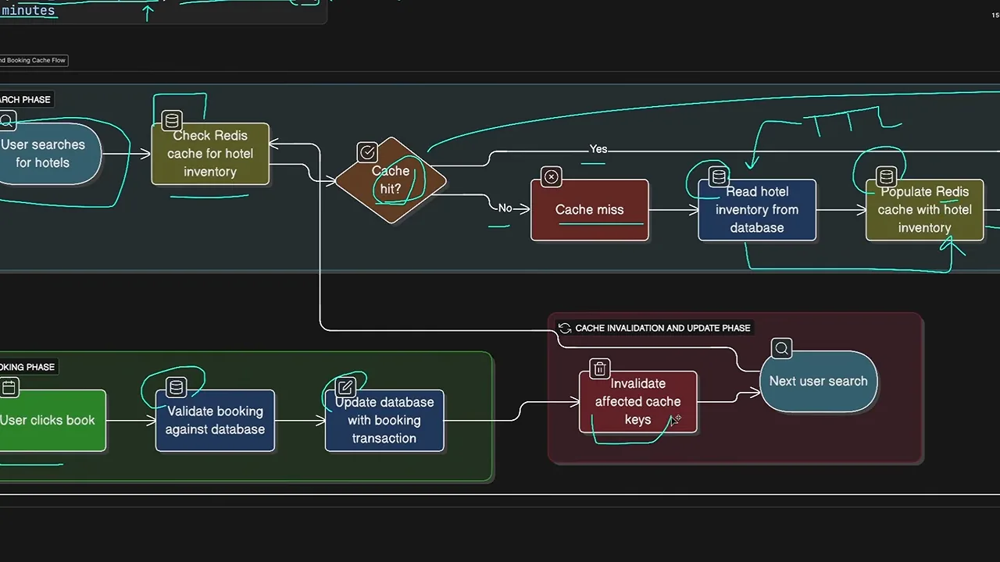
검색은 왜 PostgreSQL로 안 될까요
PostgreSQL과 MySQL은 “ID가 123인 행을 줘”나 “이 행을 넣어”를 잘해요. 검색을 SQL로 하면 화면 위 질의처럼 위치, 편의시설, 설명에 앞뒤에 %를 붙인 LIKE 조건을 줄줄이 붙이게 돼요. 아래 “Problems” 다섯 줄이 그 결과예요.
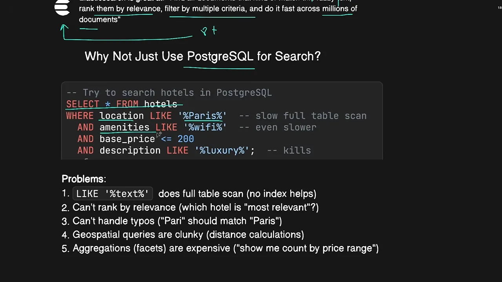
LIKE는 인덱스를 못 써서 전체 테이블을 훑어요. 파리 호텔이 전체의 10%도 안 되는데 말이에요. 영상 01:41:50에서 보기다섯 문제는 전체 테이블 스캔, 관련도 순위 없음, 'Pari'로 'Paris'를 못 찾는 오타 처리 불가, 거리 계산이 서투름, '가격대별 개수' 같은 집계가 비쌈이에요. Elasticsearch는 검색과 분석에 특화된 엔진이라 이 세 가지를 잘해요. 화면의 번호를 따라 보면 이래요.
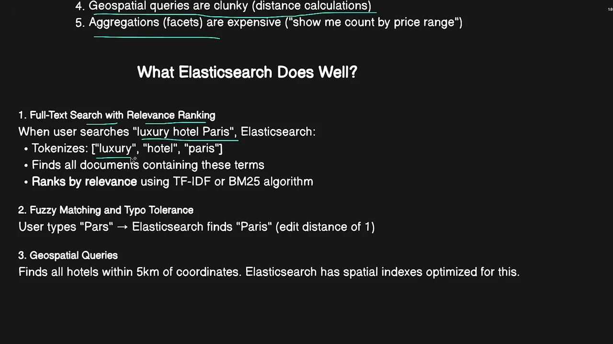
데이터를 어떻게 복사하고 맞출까요
Elasticsearch에는 데이터를 복사해 둬요. 왼쪽은 SQL의 hotels, room_types, hotel_amenities(연결 테이블), amenities 네 테이블이고, 오른쪽은 같은 호텔을 하나의 JSON(JavaScript Object Notation) 문서로 펼친 모습이에요. location과 room_types가 문서 안에 중첩되고, 편의시설은 이름 배열이 돼요. 조인이 없으니 빨라요.
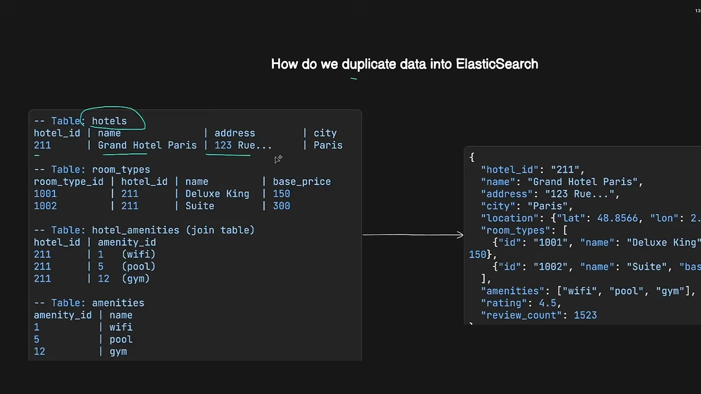
진실의 원천은 여전히 PostgreSQL이에요. 예약 가능 여부, 오버부킹 판단은 모두 PostgreSQL로 하고, 검색만 Elasticsearch로 해요. 둘을 맞추는 방법이 CDC(Change Data Capture)예요. 화면 왼쪽 상자를 위에서 아래로 따라가면 PostgreSQL의 변경이 WAL(Write-Ahead Log)에 먼저 쓰이고, Debezium 커넥터가 WAL을 실시간으로 읽어 Kafka 토픽(테이블마다 하나)에 발행하고, 직접 만든 소비자가 그 이벤트로 Elasticsearch 인덱스를 갱신해요.
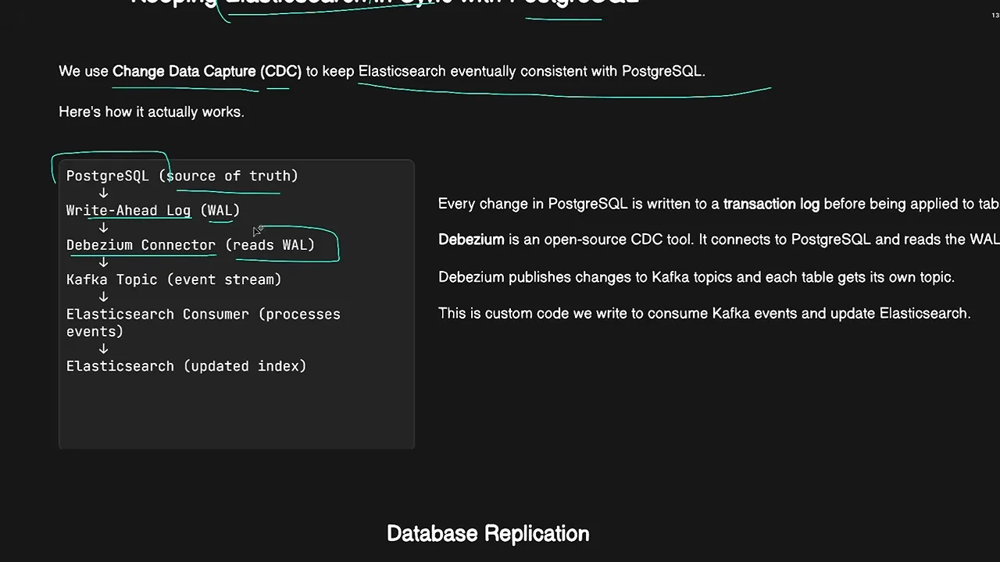
읽기 복제본과 지역 라우팅
샤딩과 별개로 읽기도 복제로 늘려요. 왼쪽 그림처럼 쓰기용 주 DB를 서로 다른 AZ의 읽기 복제본 두 개로 복제하고, 사용자는 가까운 복제본에서 읽어요. 오른쪽 코드가 함정을 막는 부분이에요. 방금 예약한 사용자가 복제본에서 읽으면 아직 반영이 안 됐을 수 있어요. 그래서 최근 쓰기가 있으면 약 10초 동안 주 DB에서, 아니면 복제본에서 읽어요.
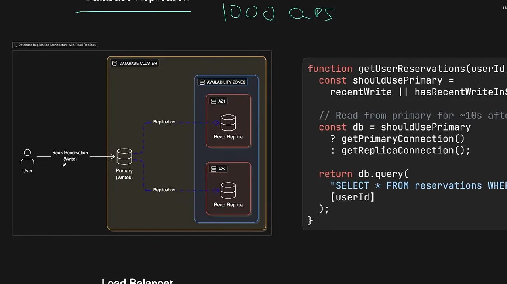
지역은 지리·지연 기반 로드 밸런서로 나눠요. 미국 사람은 대개 미국 호텔을, 유럽 사람은 유럽 호텔을 찾으니까요. 오른쪽 US-EAST-1, EU-WEST-1, AP-SOUTHEAST-1 상자마다 Redis, DB 복제본, Elasticsearch가 있어요. 하지만 가운데 'Primary Write DB'는 하나예요. 지역마다 쓰면 충돌을 관리해야 하는데, 쓰기가 17 TPS뿐이라 주 DB 하나와 지역별 복제본이면 충분해요.
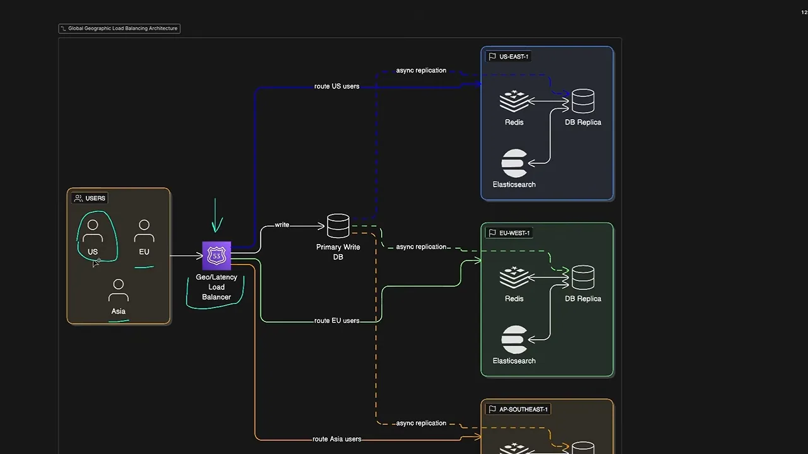
WhatsApp ①: 규모 추정과 기본 구조
세 번째 사례는 WhatsApp 같은 메시징 앱이에요. 시니어·스태프 면접에 자주 나오는 이유는 상태 있는 연결, 실시간 전달, 일관성, 규모, 장애, 여러 기기 동기화를 한꺼번에 다뤄야 해서예요. 영상은 수천 명용 단순한 버전부터 만들고, 수십억 명으로 키운 뒤, 어디서 깨지는지 찾아 고치는 순서로 가요.
무엇을 만드나요
'Core requirements'는 1:1 채팅, 최대 100명 그룹, 오프라인이면 30일까지 대기열에 보관, 이미지·영상·음성 첨부, 전송·전달·읽음 상태, '마지막 접속' 표시예요. 'Non-functional requirements'는 온라인이면 500ms 안에 전달, 메시지 유실 금지, 수십억 사용자, 필요 이상 보관하지 않기, 부품 하나가 죽어도 버티기예요.
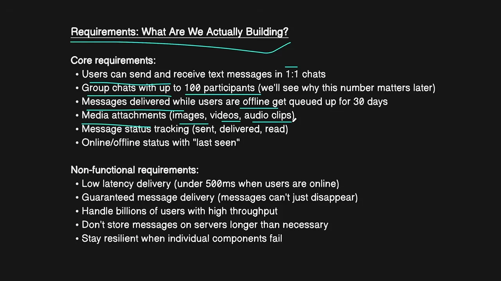
봉투 뒷면 계산
'User metrics'는 가입자 10억, 일 활성 5억, 피크 동시 접속 5천만, 1인 하루 10~20건이에요. 'Message estimations'에서 5억 × 20건 = 하루 100억 건, 초당 약 11만 5천 건 쓰기가 나와요. 피크는 3~5배라 35만~50만이에요. 'Storage'는 메시지당 1KB로 하루 10TB, 1년 3.6PB이고, 'Bandwidth'는 5천만 연결 × 10KB/s로 초당 500GB예요.
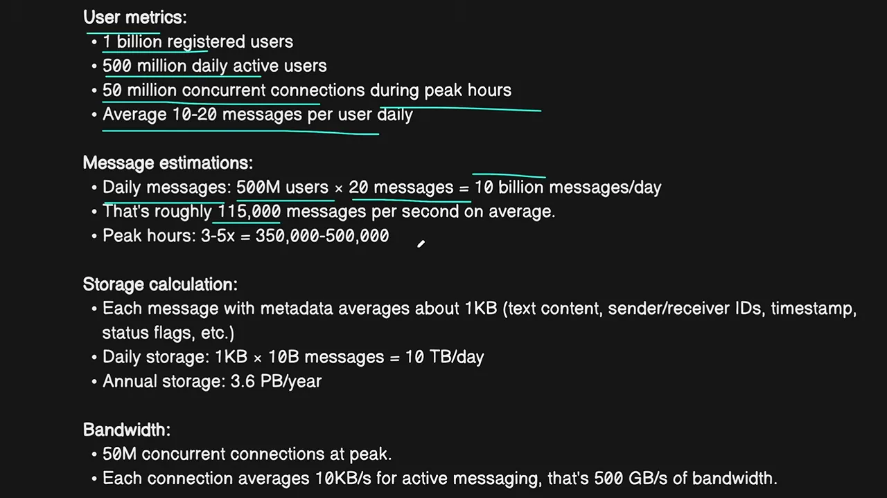
다만 대부분의 메시지는 전달되자마자 몇 초 안에 서버에서 지워져요. 사용자는 기기에 받고 원하면 Google Drive 같은 곳에 백업해요. 요구사항에서 미전달 메시지 30일 보관, 서버 기록을 남기는 사용자 약 10%로 정했어요. 필요 없는 데이터를 들고 있지 않아서 WhatsApp은 적은 인프라로 돌아간다고 해요.
처음 구조
단순하게 시작해요. 왼쪽 모바일 앱은 채팅 서버와 연결을 유지하고, UI(User Interface)와 로컬 메시지 저장, 실패한 작업의 재시도를 맡아요. 보라색 로드 밸런서가 'CHAT SERVERS' 여러 대로 트래픽을 나누고, 채팅 서버는 WebSocket을 유지하며 메시지를 라우팅하고 접속 여부를 추적해요.
채팅 서버 오른쪽 위로 가는 화살표가 Message Queue → Message Storage Service → Message Database예요. 채팅 서버는 메시지를 받자마자 앱에 '전송됨'을 알리고, 저장과 전달은 큐를 통해 비동기로 처리해요. 저장 DB는 Cassandra나 DynamoDB 같은 NoSQL이에요. 하루 수십억 건을 써야 하고 질의는 사용자별, 대화별, 시간순 조회처럼 단순하니까요.
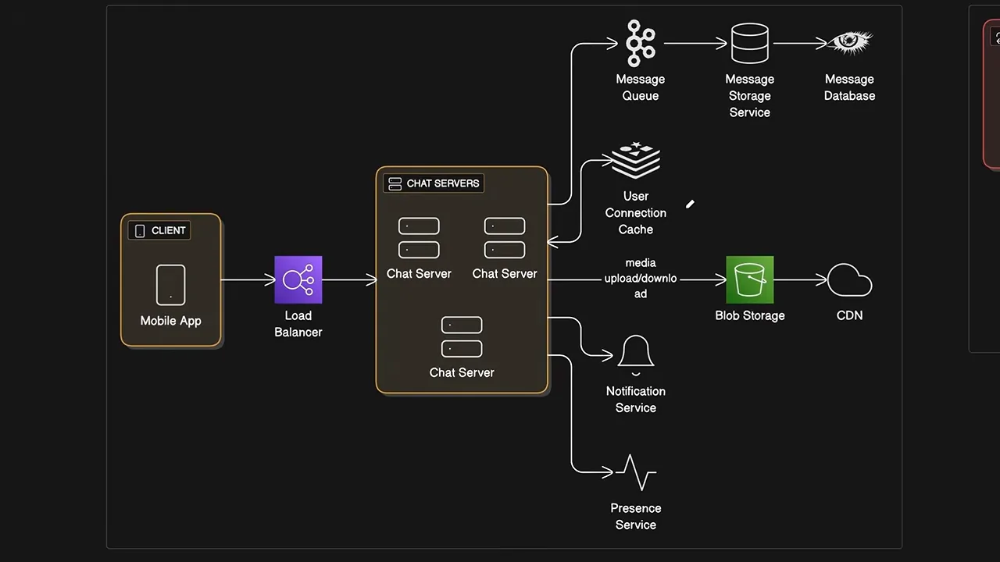
나머지 칸은 이래요. 'User Connection Cache'(Redis)는 누가 접속해 있고 어느 채팅 서버에 붙어 있는지 기억해요. Redis 조회는 마이크로초, DB는 밀리초라 이 규모에서는 차이가 커요. 미디어는 S3 같은 블롭 스토리지에 두고 CDN으로 퍼뜨려 미국과 유럽 사용자가 각자 가까운 곳에서 받게 해요. 알림 서비스는 오프라인 사용자에게 Apple 푸시 알림 서비스나 안드로이드용 FCM(Firebase Cloud Messaging)으로 푸시를 보내고, 프레즌스 서비스는 하트비트를 받아 접속 상태를 관심 있는 사용자에게 알려요.
폴링, 롱 폴링, WebSocket
대부분의 메시징 앱은 WebSocket을 써요. 영상은 왜 그런지 세 방식을 차례로 비교해요.
| 방식 | 동작 | 문제·대가 |
|---|---|---|
| 폴링 | 주기적으로 '새 메시지 있어요?'라고 물어요 | 대부분 빈 응답이라 대역폭 낭비. 2초마다 묻는데 확인 직후 메시지가 오면 2초를 기다려요 |
| 롱 폴링 | 서버가 새 메시지나 타임아웃까지 응답을 붙잡고 있어요 | 매번 연결을 열고 닫고 HTTP 핸드셰이크를 해요. 기다리는 연결이 메모리와 스레드를 차지해요 |
| WebSocket | HTTP로 시작해 핸드셰이크 후 한 연결을 계속 유지해요. 양쪽 모두 언제든 보내요 | WebSocket을 지원하는 로드 밸런서가 필요하고(영상은 L7 대신 L4라고 해요), 연결마다 서버 메모리를 더 써요 |
WebSocket 시퀀스를 보면 클라이언트가 HTTP 연결을 열고, WebSocket 핸드셰이크를 하고, 지속 연결이 맺어져요. 그 아래 'Bi-directional Communication' 상자에서 서버는 새 메시지를 생기는 즉시 밀어 주고, 클라이언트는 새 연결 없이 메시지나 확인 응답을 보내요.
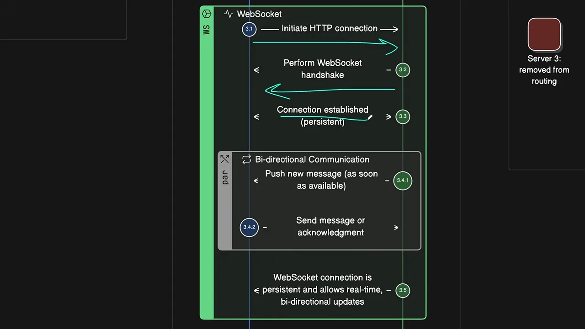
채팅 서버가 죽으면: 서비스 디스커버리
운영 중에는 채팅 서버가 죽고, 다시 배포되고, 늘었다 줄었다 해요. 로드 밸런서는 지금 살아 있는 서버를 알아야 해요. 서버가 뜨면 가운데 'SERVICE DISCOVERY CLUSTER'(Consul이나 AWS Cloud Map 같은 것)에 자기 IP(Internet Protocol)를 등록하고, 클러스터가 10초마다 헬스 체크해요. 로드 밸런서는 건강한 서버 목록을 받아 라우팅 표를 고쳐요.
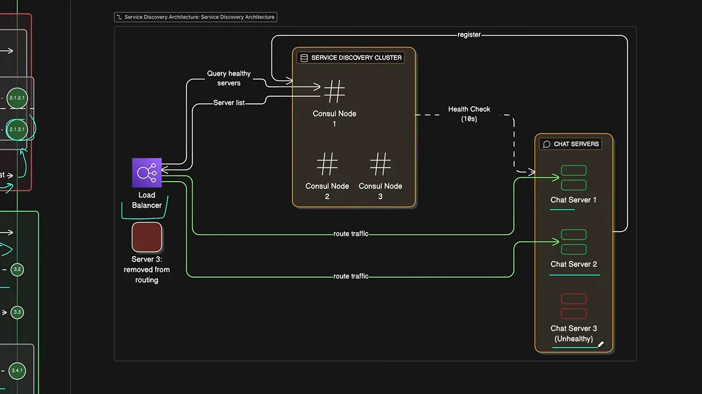
데이터 모델과 API
오른쪽 users(user_id, 고유한 phone_number, username, created_at, last_seen)와 위쪽 groups, group_members는 PostgreSQL에 둬요. 가운데 messages(sender_id, receiver_id, message_id, content, media_url, 전송·전달·읽음 status, timestamp, 삭제 여부)는 쓰기가 많아 Cassandra에 둬요. 왼쪽 message_inbox는 아직 못 받은 메시지 목록이에요.
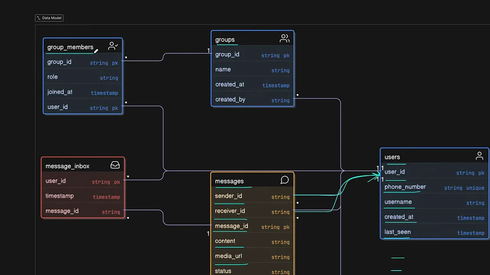
여기에 user_connection_registry를 Redis에 둬요. 사용자 ID, 붙어 있는 서버 ID, 연결 ID, 마지막 활동 시간, 기기 종류예요. 하트비트마다 갱신하고 TTL은 300초 정도예요.
API는 메시지는 WebSocket, 미디어는 REST로 나눠요. 시퀀스를 위에서부터 보면 클라이언트가 사용자 ID, 토큰, 기기 정보로 인증하고, 서버가 세션 ID, 서버 시간, 안 읽은 개수로 답해요. 그다음 메시지 보내기, 서버의 전송 확인, 새 메시지 전달, 클라이언트의 전달 확인, 읽음 확인, 보낸 사람에게 읽음 갱신 순이에요.
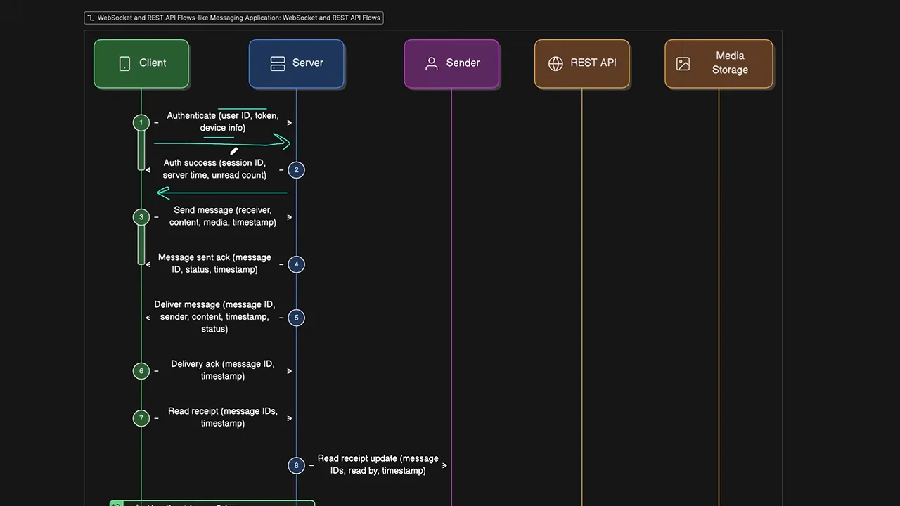
POST /api/media가 이어져요. 앱이나 탭을 닫으면 하트비트가 끊겨 연결을 정리해요. 영상 02:09:51에서 보기WhatsApp ②: 메시지가 오가는 길
여러 기기를 맞추는 법
사용자 A는 휴대폰, 태블릿, 데스크톱 세 기기를, B는 휴대폰과 노트북 두 기기를 쓴다고 해요. 기기마다 다른 채팅 서버에 붙어 있어요. 시퀀스 왼쪽부터 보면 A의 휴대폰이 서버 A로 메시지를 보내고 '전송됨'을 받아요. 서버 C, D가 같은 메시지를 A의 태블릿과 데스크톱에도 보여 줘요. 그다음 서버 A가 Redis에 B가 어디 있는지 묻고, B가 서버 B와 서버 E에 두 기기로 붙어 있다는 답을 받아요.
서버 B와 E가 B의 두 기기에 메시지를 전달해요. B가 휴대폰에서 받으면 서버 B가 서버 A에 '전달됨'을 알리고, A의 기기 상태가 바뀌어요. B가 읽으면 읽음 확인이 같은 길로 돌아가고, B의 노트북에서도 읽음으로 바뀌어요. 기기끼리 충돌하면 버전 번호를 붙여 마지막 쓰기를 우선해요.
새 기기에 전체 기록을 보내면 비싸요. 그래서 최근 30일만 보내고, 위로 스크롤하면 그때 옛 메시지를 불러오고, 아주 오래된 건 콜드 스토리지에 보관해요. 이 기능 때문에 메시지 하나가 여러 기기로 가니 전달 작업량이 약 두 배가 돼요. 그래도 사용자가 꼭 원하는 기능이라 감수해요.
둘 다 온라인일 때
영상의 흐름을 단계 순서대로 옮기면 이래요. 핵심은 서버 A가 '전송됨'을 먼저 돌려주고, 저장은 큐로 비동기 처리하고, B의 위치는 Redis로 찾고, 서버끼리는 Redis Pub/Sub으로 넘긴다는 거예요.
sequenceDiagram participant A as 사용자 A participant SA as 채팅 서버 A participant R as Redis (연결 캐시) participant SB as 채팅 서버 B participant B as 사용자 B participant Q as 메시지 큐 A->>SA: 메시지 보내기 (WebSocket) SA->>SA: 타임스탬프 기반 메시지 ID 생성 SA-->>A: ACK (전송됨) SA->>Q: 저장용으로 넣기 SA->>R: B는 어디 있나요? R-->>SA: 서버 B에 있어요 SA->>SB: Pub/Sub으로 전달 SB->>B: 실시간 전달 B-->>SB: 전달 ACK SB-->>SA: 전달 ACK 전달 SA-->>A: 상태: 전달됨 Q->>Q: Cassandra에 기록 (비동기)
B가 오프라인일 때
처음은 같아요. 다른 점은 Redis에서 B가 오프라인이라고 확인한 뒤부터예요. 서버 A는 B의 Redis 인박스에 메시지를 넣고, DB 인박스 테이블에도 저장하고, 알림 서비스로 푸시를 보내요. 알림 서비스는 Apple이나 Google의 푸시 시스템으로 B의 휴대폰을 깨워요.
sequenceDiagram participant SA as 채팅 서버 A participant R as Redis participant DB as DB 인박스 participant N as 알림 서비스 participant SC as 채팅 서버 C participant B as 사용자 B SA->>R: B 접속 상태 확인 (오프라인) SA->>R: B의 인박스에 추가 SA->>DB: 인박스 테이블에 저장 SA->>N: B에게 푸시 요청 N-->>B: APNs / FCM 푸시 Note over B,SC: B가 앱을 열고 서버 C에 접속 SC->>R: 밀린 메시지 꺼내기 SC->>DB: 빠진 메시지 확인 SC->>B: 밀린 메시지 전달 SC-->>SA: 읽음 상태를 A에게 알림
그룹 메시지: 한 번 저장하고 여러 곳으로
50~100명 그룹은 그룹 서비스가 관리해요. 시퀀스를 위에서부터 보면 A가 그룹 789에 메시지를 보내고, 서버 A가 그룹 서비스에 멤버를 물어 50명의 ID를 받아요. 50명의 상태는 Redis로 확인해요(DB를 매번 읽지 않으려고요). 결과는 30명 온라인, 20명 오프라인이에요.
각 기기의 전달 확인은 서버 A로 모여 A의 화면 상태를 바꿔요. 오프라인 20명은 1:1과 같은 방법이에요. Redis 인박스 20개, DB 인박스 레코드 20개를 쓰고 푸시를 보내요. 메시지 본문은 큐를 거쳐 DB에 한 번만 써요. A의 화면에는 40명 전달, 20명 대기 같은 상태가 보여요. 이렇게 한 메시지를 여러 수신자에게 퍼뜨리는 게 팬아웃이에요.
미디어는 서버를 거치지 않아요
잘못된 방법은 클라이언트가 이미지를 채팅 서버에 올리고, 서버가 DB에 넣고, 받는 사람이 서버에서 내려받는 거예요. 그러면 메시지를 빨리 나르는 게 장점인 채팅 서버가 큰 파일을 옮기느라 대역폭에 묶여요.
올바른 방법은 미리 서명된 URL이에요. 시퀀스를 따라가면 A가 '이미지 보내기'를 누르고, 앱이 서버 A에 업로드 URL을 요청해요. 서버 A는 블롭 스토리지에서 서명된 업로드 URL을 받아 앱에 넘기고, 초록 'Direct Upload' 상자에서 앱이 S3에 직접 올려요. 업로드가 끝나면 미디어 URL을 담은 채팅 메시지를 보내요.
받는 쪽도 같아요. B가 미디어를 누르면 서버 B가 서명된 다운로드 URL을 만들어 주고, 노란 상자처럼 두 방법 중 하나로 받아요. 위 'Via CDN'은 사용자 가까이 복제된 CDN에서 받고, 아래 'Direct from Storage'는 S3에서 바로 받아요.
서명된 URL은 정해 둔 TTL이 지나면 만료돼요. 미디어 자체의 TTL도 메시지 보관 기간인 30일에 맞춰 자동으로 지워요.
WhatsApp ③: 저장, 암호화, 남용 막기, 샤딩
Kafka로 저장 서비스를 떼어 내요
채팅 서버가 수천 명을 감당하게 됐으니, 더 키우려면 서버끼리 떼어 내야 해요. 가장 흔한 방법이 Kafka 같은 메시지 큐예요. 그림 왼쪽 큐의 파티션을 오른쪽 'MESSAGE STORAGE SERVICE INSTANCES'에 나눠 줘요. 인스턴스 1은 0~9번, 2는 10~19번, 3은 20~29번 파티션이에요. 인스턴스는 상태가 없어서 필요한 만큼 늘릴 수 있어요.
인스턴스 하나 안의 흐름을 왼쪽부터 보면, 큐에서 500건씩 묶어 가져와요. Kafka 소비자는 앞 묶음을 처리할 시간을 두려고 100ms마다 새 메시지를 가져가요. 20개 작업 스레드가 병렬로 스키마와 메타데이터(파일 크기 한도 등)를 확인하고, 'Validate & Enrich' 단계에서 중복 제거용 해시를 계산하고, @멘션을 뽑고, 링크 미리보기 대상을 찾고, 나중에 검색할 인덱스를 만들어요.
오른쪽 절반이 쓰기예요. 'Batch Buffer'가 메모리에 메시지를 모으다가 1,000건이 차거나 5초가 지나면 비워요. 대상 샤드별로 정렬하고 대화별로 묶어 'Batch Writer'가 DB 클러스터에 원자적 배치 삽입을 해요. 성공하면 검색·분석 인덱스를 갱신하고 처리 완료로 표시해 Kafka 오프셋을 커밋해요. 실패하면 아래 'Retry & DLQ Handler'로 가요.
배치를 쓰는 이유는 숫자로 분명해요. 한 건 삽입에 5ms면 1,000건을 따로 넣는 데 5초가 걸려요. 1,000건을 한 번에 넣으면 50ms예요. 두 막대를 같은 눈금에 놓으면 이래요.
코드로는 Cassandra에 BEGIN BATCH로 메시지 INSERT를 묶어요. 화면의 주석처럼 같은 메시지를 양쪽 참가자의 샤드에 모두 써요. 이 이유는 아래 샤딩에서 나와요.
INSERT는 보낸 사람과 받는 사람 ID 순서만 바뀐 같은 메시지예요. 영상 02:38:20에서 보기종단 간 암호화: 서버도 못 읽어요
WhatsApp에서는 메시지를 보낸 기기에서 암호화하고 받는 기기에서만 풀어요. 중간의 채팅 서버 A, B도 내용을 읽지 못해요. 영상은 Signal 프로토콜로 설명해요. 시퀀스를 위에서부터 보면 A가 키 서버에 공개 신원 키를 올리고, B는 공개 신원 키와 프리키 묶음을 올려요. 가입할 때 각자 키 쌍을 만들고 개인 키는 기기를 떠나지 않아요.
A는 B의 신원 키와 프리키 하나를 받아 키 교환을 하고, 둘은 같은 세션 키를 갖게 돼요. 화면의 식처럼 메시지는 세션 키에 메시지 카운터를 더해 AES-256으로 암호화하고, HMAC-SHA256으로 위변조를 확인해요. 카운터가 메시지마다 올라가서, 세션 키가 새도 메시지 하나하나를 풀기는 여전히 어렵다고 해요.
레이트 리밋과 남용 막기
제한이 없으면 누구나 데이터를 긁어 가거나 DDoS를 걸 수 있어요. 그림 왼쪽 'User Action'이 행동 유형으로 갈라져요. 위 'PER-USER LIMITS' 상자에서 메시지 보내기는 메시지 토큰 버킷, 그룹 만들기는 그룹 생성 카운터, 미디어 올리기는 미디어 할당량을 확인해요. 아래 줄은 접속 시도의 IP 연결 카운터와 그룹 초대 카운터예요.
영상이 예로 든 한도는 메시지 분당 100개, 그룹 생성 시간당 5개, 미디어 분당 10~100개, 1분 안에 서로 다른 IP 5곳 이상에서 로그인 시도예요. 숫자는 예시일 뿐이고 요구사항 단계에서 정해요. 한도를 넘으면 오른쪽 'ENFORCEMENT'로 가서 '너무 많은 요청' 에러를 보여 주거나 CAPTCHA(Completely Automated Public Turing test to tell Computers and Humans Apart)를 풀게 하고, 반복하면 제재를 올려요.
구현은 토큰 버킷이에요. 용량과 다시 채우는 속도로 시작하고, 요청마다 토큰이 1개 이상이면 하나 빼고 통과시키고, 없으면 막아요. 시간이 지나면 지난 시간만큼 토큰을 채워요. 아래에서 직접 눌러 볼 수 있어요.
보낸 메시지 0개 · 막힌 메시지 0개 · 흐른 시간 0분 0초
가정: 영상의 '분당 100개' 규칙대로 용량 100, 1분에 100개를 고르게 다시 채워요.
- '한꺼번에 30개'를 네 번 눌러 보세요. 네 번째에 10개만 나가고 나머지가 막혀요. 분당 100개 한도예요.
- 막힌 뒤 '10초 지나기'를 누르면 토큰이 조금씩 다시 차요. 한도는 영원히 막는 게 아니라 속도를 제한해요.
- 계속 한도를 넘겨 보세요. 경고 → 1시간 제한 → 24시간 제한 → 계정 정지로 올라가고, 제한 중에는 토큰이 있어도 막혀요.
이 카운터는 모든 서버가 함께 봐야 해요. 사용자마다 다른 서버에 WebSocket으로 붙어 있으니까요. 그래서 Redis 같은 중앙 저장소에 두고 원자적 연산으로 세요. 그래야 다른 서버로 옮겨 붙어 한도를 피하는 일이 없어요. 24시간까지만 들고 있으면 되니 DB보다 Redis가 맞아요.
메시지 DB 샤딩
서버를 늘리고 레이트 리밋을 걸어도 DB 하나로는 못 버텨요. 샤드 키를 무엇으로 할지가 핵심이고, 면접에서는 하나를 고르기 전에 선택지와 대가를 함께 말해야 해요.
| 샤드 키 | 좋은 점 | 대가 |
|---|---|---|
| user_id | 한 사용자의 메시지가 한 샤드에 모여 한 곳에서만 읽어요 | 많이 쓰는 사용자가 핫스팟이 되어 샤드 크기가 들쭉날쭉해요 |
| message_id | 데이터가 고르게 퍼져요 | 한 사용자의 메시지를 읽으려면 모든 샤드를 뒤져 합쳐야 해서 느리고 비싸요 |
| user_id + 양쪽에 복사 | 대화 상대의 샤드에도 같은 메시지를 써서 각자 자기 샤드만 읽어요 | 쓰기가 두 배가 돼요 |
영상이 고른 건 세 번째예요. 그림 가운데 'PRIMARY SHARDS'에서 A↔B 대화는 A의 샤드와 B의 샤드에 모두 써요. 오른쪽 'READ REPLICAS'로 복제한 뒤 A는 A1 복제본에서, B는 B1 복제본에서 기록을 읽어요. 쓰기를 맡는 주 샤드는 읽기 부하를 받지 않아요.
정리하면 샤딩은 쓰기를 늘리고 복제는 읽기를 늘려요. 샤드 하나를 확대하면 클라이언트의 쓰기는 모두 'Primary Node'로 가요(예: 사용자 ID 1~1,000이 샤드 1). 주 노드는 복제본 세 개에 비동기로 복제하고, 안 읽은 메시지 보기 같은 읽기는 복제본만 써요.
쓰레기 치우기
만료된 미디어, 오래된 미전달 메시지, 끊긴 연결은 정기적으로 치워요. 왼쪽 위 'Job Scheduler'(Airflow나 cron)가 매일 또는 매주 작업을 'Job Queue'에 넣어요. 이 큐는 메시지 큐와 따로 둬요. 'Worker Pool'(컨테이너 실행기)이 작업을 가져가 확인 응답을 보내고, 실패하면 다시 큐에 넣어요. 가운데 'CLEANUP JOBS'의 다섯 칸이 하는 일이고, 결과는 오른쪽 모니터링으로 보내요.
WhatsApp ④: 장애, 여러 지역, 기능 출시
지금까지는 모든 부품이 잘 돌아가는 정상 경로였어요. 현실에서는 어디서든 장애가 나요. 메시징 앱에서 꺼낼 수 있는 대표적인 장애 몇 가지를 영상은 이렇게 다뤄요.
Redis가 죽으면
미전달 메시지 인박스를 Redis에 두는데, Redis 클러스터 자체가 죽으면 어떻게 될까요. 그림의 채팅 서버에서 나가는 화살표를 위에서부터 보면, (1) 미전달 메시지를 빠른 Redis 인박스(TTL 7일)에 쓰고, (2) 영구 저장소인 DB 인박스에도 백업으로 써요. 받을 때는 Redis를 먼저 보고, Redis가 비었거나 죽었으면 DB에서 읽어요.
Redis가 살아나면 백그라운드 작업이 delivered_at IS NULL인 DB 인박스 행을 읽어 Redis 인박스를 다시 채워요. 그다음부터는 평소처럼 Redis로 쓰고 읽어요. 영상은 코드로도 보여 줘요. 저장 함수는 Redis에 쓰다 실패하면 로그만 남기고 넘어가며 DB에는 항상 써요. 조회 함수는 Redis를 먼저 읽고, 예외가 나면 DB를 질의해요.
여러 지역으로 나누기
WhatsApp 사용자는 전 세계에 있어요. 지역마다 채팅 서버, Redis 클러스터, DB 샤드를 모두 갖춰 혼자서도 돌아가게 해요. 그림 왼쪽 아래 도쿄의 A가 앱을 열면 GeoDNS가 가장 가까운 싱가포르 리전 IP를 알려 줘요. A는 그곳 로드 밸런서를 거쳐 채팅 서버에 WebSocket으로 붙어요.
리전마다 서버 수는 달라요. 사용자가 많은 곳은 채팅 서버를 많이, 적은 곳은 적게 둬요.
Kafka가 통째로 죽으면
Kafka 클러스터는 여러 브로커로 이뤄지고, 토픽은 파티션으로 나뉘며 파티션마다 리더와 복제본이 있어요. 브로커 하나가 죽으면 새 브로커로 바꾸고 파티션을 재균형하면 돼요. 드물지만 클러스터 전체가 죽으면 채팅 서버는 발행을 못 하고, 저장 서비스는 소비를 못 해요. 메시지가 저장되지 않으니 유실될 수 있어요.
영상의 대비책을 순서대로 옮기면 이래요. 핵심은 실패를 전체 실패로 만들지 않고, 메모리와 디스크에 차례로 버티다가 새 클러스터가 뜨면 다시 보내는 거예요.
flowchart TD A["채팅 서버: Kafka에 발행 시도"] -->|성공| OK["정상 경로"] A -->|Kafka 오류| L["로그 남기기"] L --> M["메모리 버퍼에 넣기 (최대 10만 건)"] M -->|버퍼가 꽉 참| D["가장 오래된 것부터 버리기"] M --> F["로컬 디스크에 추가 전용 로그로도 쓰기"] M --> R["2초마다 Kafka 복구 확인 후 재발행"] F -->|채팅 서버도 재시작| P["디스크 로그를 다시 읽어 재발행"] R --> X["발행 성공 후 디스크 로그 삭제"] P --> X
그림은 새 클러스터가 뜬 뒤의 복구 과정이에요. 왼쪽 위 옛 Kafka가 파괴되면 장애를 감지해 새 클러스터를 띄워요. 아래 저장 서비스(소비자)가 DB에서 마지막으로 처리한 message_id를 조회하고, 채팅 서버(생산자)에게 그 ID 이후의 메시지를 요청해요. 채팅 서버가 메모리에 남은 빠진 메시지를 돌려주면 새 Kafka에 다시 발행하고, 정상 소비를 재개해요.
새 기능은 피처 플래그로 조금씩
큰 시스템은 새 기능을 모두에게 한 번에 내지 않아요. Azure나 AWS의 자체 기능이나 LaunchDarkly 같은 외부 도구로 피처 플래그를 둬요. 플래그는 키-값 쌍이에요. 예를 들어 '새 테마 켜짐'이 스테이징에서는 true, 운영에서는 false예요. 운영에 낼 때도 20% 사용자에게만 켜고, 실패 로그가 없으면 모두에게 켜요.
정말 실력을 늘리려면
마지막으로 발표자는 세 사례에 쓴 순서를 다시 묶어요. 요구사항을 정하고 추정치를 계산해야 어떤 저장소와 서비스가 필요한지 알 수 있어요. Kafka가 정말 필요한지도 그때 정해요. 처음부터 Redis Pub/Sub이나 샤딩으로 뛰어들지 말고, 수천 명용 단순한 구조로 시작해 면접관과 대화하며 병목을 찾아요.
- 외우지 말고 단계를 익혀요. 시스템마다 흐름을 따라가며 트레이드오프를 말해요.
- 모든 결정에는 비용이 있어요. WebSocket은 HTTP보다 메모리를 더 쓰지만 메시징 앱에서는 그만한 값어치가 있고, 다른 상황에서는 폴링이 맞을 수 있어요.
- 봉투 뒷면 계산을 직접 연습하고 맞는지 확인해 봐요.
- 장애는 주요 컴포넌트와 전체 구조가 정해진 뒤에 다뤄요.
- 완벽한 설계는 기대하지 않아요. 생각을 소리 내어 말하면 잘못된 길로 갈 때 면접관이 힌트를 줘요.
They will usually want to see how you think, how you discuss tradeoffs, or are you just picking something because you like it.
면접관은 보통 어떻게 생각하는지, 트레이드오프를 어떻게 이야기하는지, 아니면 그냥 좋아서 고르는지를 보고 싶어 해요.
— 영상 03:12:50